5. Bijlagen
Hier beschrijven we de installatie en het basisgebruik van de tools die worden gebruikt in het document „Java 5-persistentie in de praktijk”. De hieronder gegeven informatie is die welke beschikbaar was in mei 2007. Deze zal snel verouderd raken. Wanneer dat het geval is, wordt de lezer verzocht vergelijkbare stappen te volgen, die echter niet identiek zullen zijn. De installaties zijn uitgevoerd op een Windows-computer met XP Professional.
5.1. Java
We gebruiken de nieuwste versie van Java die beschikbaar is bij Sun [http://www.sun.com]. De downloads zijn toegankelijk via de url [http://java.sun.com/javase/downloads/index.jsp]:


Start de installatie van JDK vanuit het gedownloade bestand. Standaard wordt Java geïnstalleerd in [C:\Program Files\Java]:

5.2. Eclipse
5.2.1. Basisinstallatie
Eclipse is beschikbaar via de URL IDE en kan worden gedownload via de URL [http://www.eclipse.org/]. Hieronder downloaden we Eclipse 3.2.2:

Zodra het zip-bestand is gedownload, pakken we het uit in een map op de harde schijf:
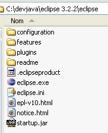
We noemen de installatiemap van Eclipse, hierboven [C:\devjava\eclipse 3.2.2\eclipse], voortaan <eclipse>. [eclipse.exe] is het uitvoerbare bestand en [eclipse.ini] het configuratiebestand daarvan. Laten we de inhoud ervan eens bekijken:
Deze argumenten worden bij het starten van Eclipse als volgt gebruikt:
We komen tot hetzelfde resultaat als met het .ini-bestand door een snelkoppeling te maken die Eclipse met dezelfde argumenten start. Laten we deze eens toelichten:
- -vmargs: geeft aan dat de volgende argumenten bestemd zijn voor de Java-virtuele machine die Eclipse gaat uitvoeren. Eclipse is een Java-toepassing.
- -Xms40m: ?
- -Xmx256m: stelt de geheugengrootte in MB in die wordt toegewezen aan de Java-virtuele machine (JVM) die Eclipse uitvoert. Standaard is deze grootte 256 MB, zoals hier weergegeven. Indien de machine dit toelaat, verdient 512 MB de voorkeur.
Deze argumenten worden doorgegeven aan de JVM die Eclipse uitvoert. De JVM wordt vertegenwoordigd door een bestand [java.exe] of [javaw.exe]. Hoe wordt dit bestand gevonden? Er wordt op verschillende manieren naar gezocht:
- in het bestand PATH van het bestand OS
- in de map <JAVA_HOME>/jre/bin, waarbij JAVA_HOME een systeemvariabele is die de hoofdmap van een JDK definieert.
- naar een locatie die als argument aan Eclipse wordt doorgegeven in de vorm -vm <pad>\javaw.exe
Deze laatste oplossing verdient de voorkeur, omdat de andere twee onderhevig zijn aan onvoorziene omstandigheden bij latere installaties van applicaties, die ofwel de PATH van de OS kunnen wijzigen, ofwel de variabele JAVA_HOME kunnen wijzigen.
We maken daarom de volgende snelkoppeling aan:

<eclipse>\eclipse.exe" -vm "C:\Program Files\Java\jre1.6.0_01\bin\javaw.exe" -vmargs -Xms40m -Xmx512m | |
Eclipse-installatiemap <eclipse> |
Als dit is gebeurd, starten we Eclipse via deze snelkoppeling. Er verschijnt een eerste dialoogvenster:

Een [workspace] is een werkruimte. Laten we de voorgestelde standaardwaarden accepteren. Standaard worden Eclipse-projecten aangemaakt in de map <workspace> die in dit dialoogvenster is opgegeven. Er is een manier om dit gedrag te omzeilen. Dat zullen we systematisch doen. Het antwoord dat in dit dialoogvenster wordt gegeven, is dus niet van belang.
Na deze stap wordt de Eclipse-ontwikkelomgeving weergegeven:

We sluiten het venster [Welcome] zoals hierboven voorgesteld:

Voordat we een Java-project aanmaken, gaan we Eclipse configureren om aan te geven dat JDK moet worden gebruikt voor het compileren van Java-projecten. Hiervoor kiezen we de optie [Window / Preferences / Java / Installed JREs ]:

Normaal gesproken moet de JRE (Java Runtime Environment) die is gebruikt om Eclipse zelf te starten, in de lijst met JRE staan. Dit is normaal gesproken de enige. Het is mogelijk om JRE-bestanden toe te voegen met de knop [Add]. U moet dan de hoofdmap van het JRE-bestand aangeven. De knop [Search] start op zijn beurt een zoekopdracht naar JREs op de schijf. Dit is een goede manier om te achterhalen hoe het staat met de JREs-bestanden die je installeert en vervolgens vergeet te verwijderen wanneer je overstapt op een nieuwere versie. Hierboven is de aangevinkte JRE degene die zal worden gebruikt om Java-projecten te compileren en uit te voeren. Dit is degene die in paragraaf 5.1 is geïnstalleerd en die ook is gebruikt om Eclipse te starten. Door erop te dubbelklikken krijg je toegang tot de eigenschappen ervan:

Laten we nu een Java-project [File / New / Project] aanmaken:
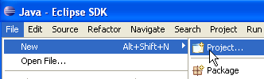 | 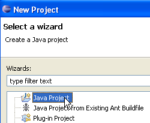 |
Kies [Java Project] en vervolgens [Next] ->

In [2] geven we een lege map op waarin het Java-project zal worden geïnstalleerd. In [1] geven we het project een naam. De naam hoeft niet dezelfde te zijn als die van de map, zoals het bovenstaande voorbeeld zou kunnen doen vermoeden. Zodra dit is gebeurd, klikken we op de knop [Next] om naar de volgende pagina van de aanmaakwizard te gaan:

Hierboven maken we een speciale map aan in het project om de bronbestanden (.java) daarin op te slaan:
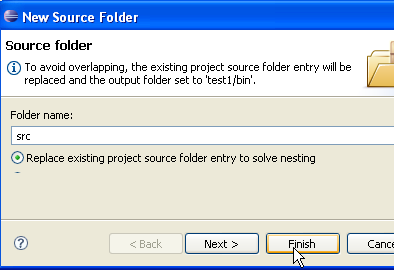
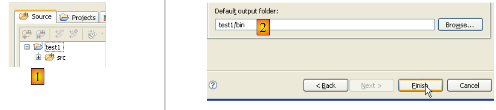 |
- in [1] zien we de map [src] waarin de .java-bronbestanden zullen worden opgeslagen
- in [2] zien we de map [bin] waarin de gecompileerde .class-bestanden zullen worden opgeslagen
We ronden de wizard af met [Finish]. We hebben nu een Java-projectskelet:

Klik met de rechtermuisknop op het project [test1] om een Java-klasse aan te maken:

 |
- in [1], de map waarin de klasse wordt aangemaakt. Eclipse stelt standaard de map van het huidige project voor.
- in [2], het pakket waarin de klasse wordt geplaatst
- in [3], de naam van de klasse
- in [4] vragen we om de statische methode [main] te genereren
We bevestigen de wizard via [Finish]. Het project wordt vervolgens uitgebreid met een klasse:

Eclipse heeft het skelet van de klasse gegenereerd. Dit wordt weergegeven door te dubbelklikken op het bovenstaande [Test1.java]:

We passen de bovenstaande code als volgt aan:

We voeren het programma [Test1.java] uit: [clic droit sur Test1.java -> Run As -> Java Application]
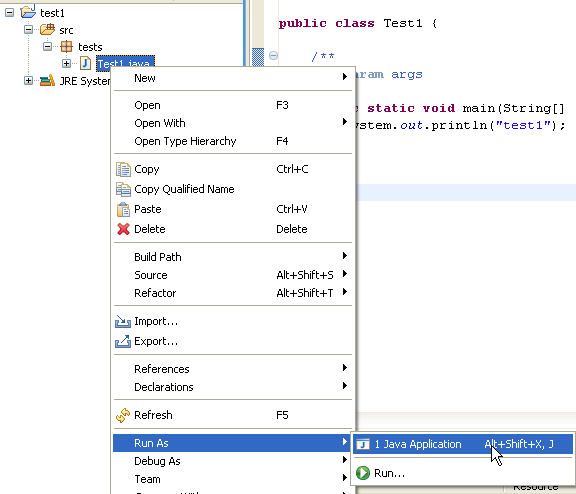
Het resultaat van de uitvoering wordt weergegeven in het venster [Console]:

Het venster [Console] zou standaard moeten verschijnen. Als dat niet het geval is, kunt u het weergeven met [Window/Show View/Console]:

5.2.2. Keuze van de compiler
Met Eclipse kan code worden gegenereerd die compatibel is met Java 1.4, Java 1.5 en Java 1.6. Standaard is het programma geconfigureerd om code te genereren die compatibel is met Java 1.4. Voor API en JPA is Java 1.5-code vereist. We wijzigen het type code dat door [Window / Preferences / Java / Compiler] wordt gegenereerd:
 |
- in [1]: keuze voor de optie [Java / Compiler]
- naar [2]: keuze voor compatibiliteit met Java 5.0
5.2.3. Installatie van de Callisto-plugins
Met de hierboven geïnstalleerde basisversie kun je Java-consoleapplicaties bouwen, maar geen web- of Swing-applicaties; of je moet alles zelf doen. We gaan verschillende plug-ins installeren:
We gaan als volgt te werk [Help/Software Udates/Find and Install]:
 |
- in [2] geven we aan dat we nieuwe plug-ins willen installeren
 |
- in [3] geef je aan welke websites je wilt doorzoeken om de plug-ins te vinden
- in [4] vink je de gewenste plug-ins aan
 |
- in [5] geeft Eclipse aan dat je een plug-in hebt gekozen die afhankelijk is van andere plug-ins die niet zijn geselecteerd
- in [6] gebruik je de knop [Select Required] om de ontbrekende plug-ins automatisch te selecteren
- in [7], accepteer je de licentievoorwaarden van deze verschillende plug-ins
 |
- in [8] wordt de lijst weergegeven van alle plug-ins die zullen worden geïnstalleerd
- in [9] start je het downloaden van deze plug-ins
- in [10]: zodra deze zijn gedownload, worden ze allemaal geïnstalleerd zonder de handtekening te controleren
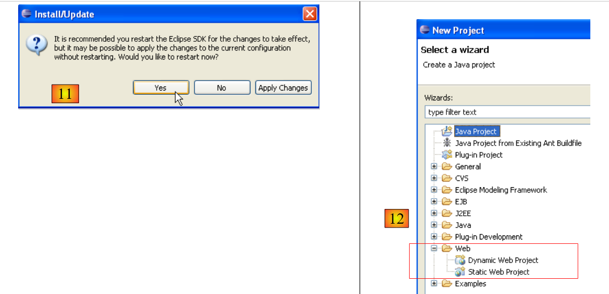 |
- in [11], na afloop van de installatie van de plug-ins, laat men Eclipse opnieuw opstarten
- in [12]; als je [File/New/Project] uitvoert, zul je zien dat je nu webapplicaties kunt maken, wat aanvankelijk niet mogelijk was.
5.2.4. Installatie van de plug-in [TestNG]
TestNG (Test Next Generation) is een tool voor unit-tests die qua opzet vergelijkbaar is met JUnit. Deze tool biedt echter verbeteringen waardoor we hier de voorkeur geven aan TestNG boven JUnit. We gaan te werk zoals eerder: [Help/Software Udates/Find and Install]:
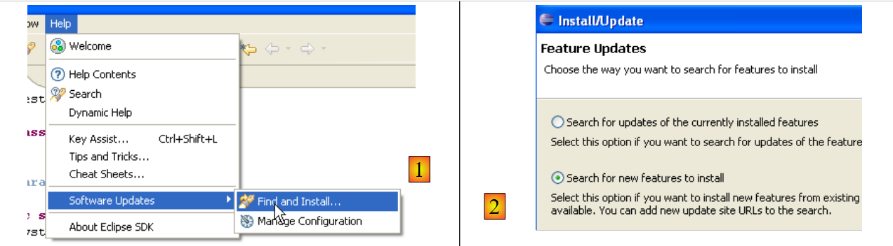 |
- in [2] geven we aan dat we nieuwe plug-ins willen installeren
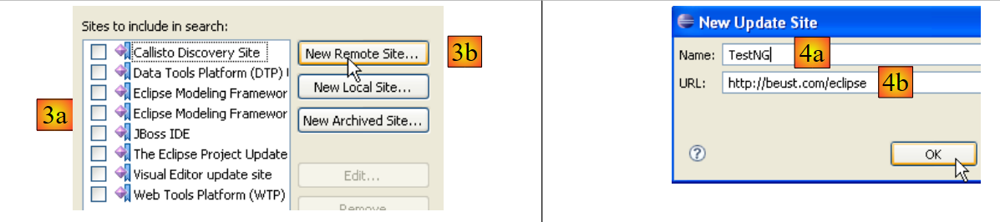 |
- in [3a] is de downloadpagina van [TestNG] niet aanwezig. We voegen deze toe met [3b]
- in [4b]: de site van de plug-in is [http://beust.com/eclipse]. In [4a] vullen we in wat we willen.
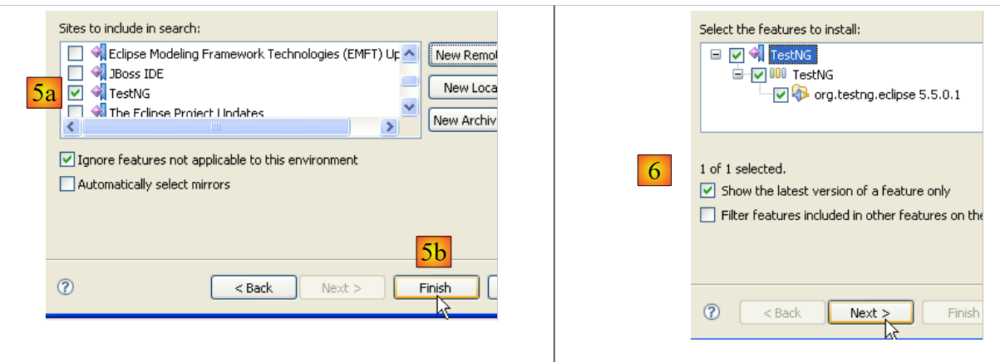 |
- in [5a] is de plug-in [TestNG] geselecteerd voor de update. In [5b] starten we de update.
- In [6] is de verbinding met de website van de plug-in tot stand gebracht. We krijgen alle plug-ins te zien die op de website beschikbaar zijn. Hier is er maar één, die we selecteren voordat we naar de volgende stap gaan.
 |
- in [7], we gaan akkoord met de licentievoorwaarden van de plug-in
- in [8] krijgen we de lijst te zien van alle plug-ins die zullen worden geïnstalleerd, in dit geval één. We starten het downloaden. Vervolgens verloopt alles zoals hierboven beschreven voor de Callisto-plug-ins.
Zodra Eclipse opnieuw is opgestart, kun je controleren of de nieuwe plug-in aanwezig is door bijvoorbeeld de beschikbare weergaven te bekijken [Window / show View / Other]:
 |
Hierboven zien we dat er een weergave [TestNG] is die er voorheen niet was.
5.2.5. Installatie van de plug-in [Hibernate Tools]
Hibernate is een JPA-provider en de [Hibernate Tools]-plug-in voor Eclipse is nuttig bij het bouwen van JPA-toepassingen. In mei 2007 is alleen de nieuwste versie (3.2.0beta9) geschikt om met Hibernate/JPA te werken, en deze is niet beschikbaar via de zojuist beschreven methode. Alleen oudere versies zijn dat wel. We gaan het dus op een andere manier aanpakken.
De plug-in is beschikbaar op de website van Hibernate Tools: http://tools.hibernate.org/.
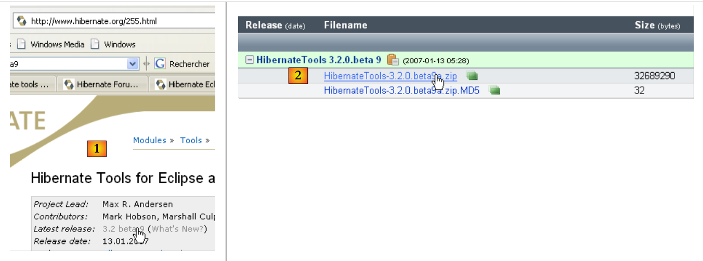 |
- in [1], selecteer je de nieuwste versie van Hibernate Tools
- in [2], en downloaden we deze
 |
- in [3], pak je met een zip-programma het gedownloade zip-bestand uit in de map <eclipse> (het is beter als Eclipse niet actief is)
- in [4], je geeft toestemming dat sommige bestanden tijdens het uitpakken worden overschreven
Start Eclipse opnieuw op:
 |
- in [1]: open een perspectief
- in [2]: er is nu een perspectief [Hibernate Console]
We gaan niet verder met de plug-in [Hibernate Tools] (Cancel in [2]). Hoe deze te gebruiken wordt uitgelegd in de voorbeelden van de tutorial.
Soms detecteert Eclipse de aanwezigheid van nieuwe plug-ins niet. Je kunt het programma dwingen om alle plug-ins opnieuw te scannen met de optie -clean. Het uitvoerbare bestand van de Eclipse-snelkoppeling zou dan als volgt worden aangepast:
"<eclipse>\eclipse.exe" -clean -vm "C:\Program Files\Java\jre1.6.0_01\bin\javaw.exe" -vmargs -Xms40m -Xmx512m
Zodra de nieuwe plug-ins door Eclipse zijn gedetecteerd, verwijdert u de bovenstaande optie -clean.
5.2.6. Installatie van de plug-in [SQL Explorer]
We gaan nu een plug-in installeren waarmee we de inhoud van een database rechtstreeks vanuit Eclipse kunnen verkennen. De beschikbare plug-ins voor Eclipse zijn te vinden op de website [http://eclipse-plugins.2y.net/eclipse/plugins.jsp]:
 |
- op [1]: de website voor Eclipse-plugins
- op [2]: kies de categorie [Database]
- op [3]: in de categorie [Database], kies voor weergave op rangschikking (niet erg betrouwbaar gezien het geringe aantal mensen dat stemt)
- in [4]: QuantumDB staat op de eerste plaats
- in [5]: we kiezen voor SQLExplorer, een oudere versie die lager scoort (3e), maar toch erg goed is. We gaan naar de website van de plug-in [plugin-homepage]
 |
- in [6] en [7]: we gaan de plug-in downloaden.
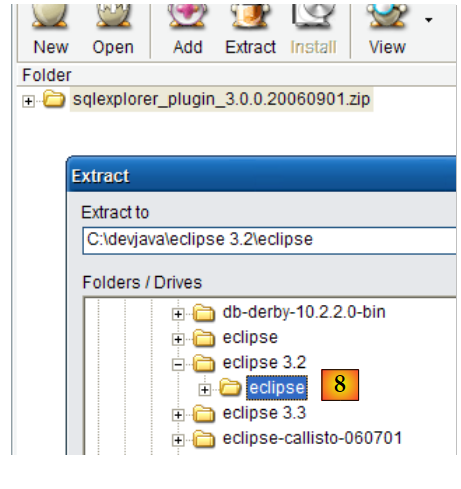 |
- en [8]: pak het zip-bestand van de plug-in uit in de Eclipse-map.
Start Eclipse ter controle opnieuw op, eventueel met de optie -clean:
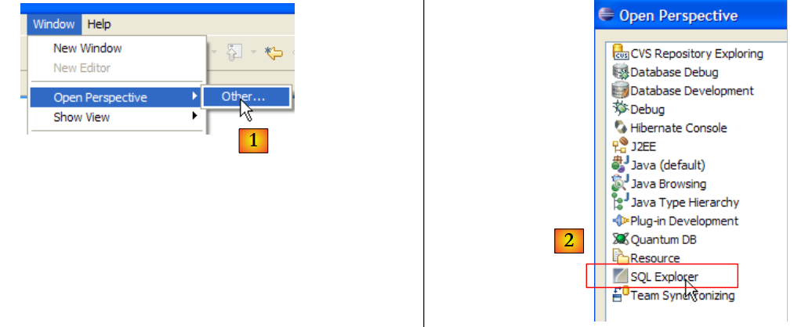 |
- in [1]: open een nieuw perspectief
- in [2]: we zien dat er een perspectief [SQL Explorer] beschikbaar is. Hier komen we later op terug.
5.3. De servletcontainer Tomcat 5.5
5.3.1. Installatie
Om servlets uit te voeren, hebben we een servletcontainer nodig. We stellen hier een van die containers voor, Tomcat 5.5, beschikbaar via de url http://tomcat.apache.org/. We beschrijven de procedure (mei 2007) om deze te installeren. Als er al een eerdere versie van Tomcat is geïnstalleerd, is het raadzaam deze eerst te verwijderen.

Om het product te downloaden, volgt u de bovenstaande link [Tomcat 5.x]:

Kies het .exe-bestand voor het Windows-platform. Zodra dit is gedownload, start u de installatie van Tomcat door erop te dubbelklikken:

Accepteer de licentievoorwaarden ->

Voer [next] uit ->

De voorgestelde installatiemap accepteren of wijzigen met [Browse] ->

Stel de gebruikersnaam en het wachtwoord van de Tomcat-serverbeheerder in. Hier hebben we [admin / admin] ingevoerd ->
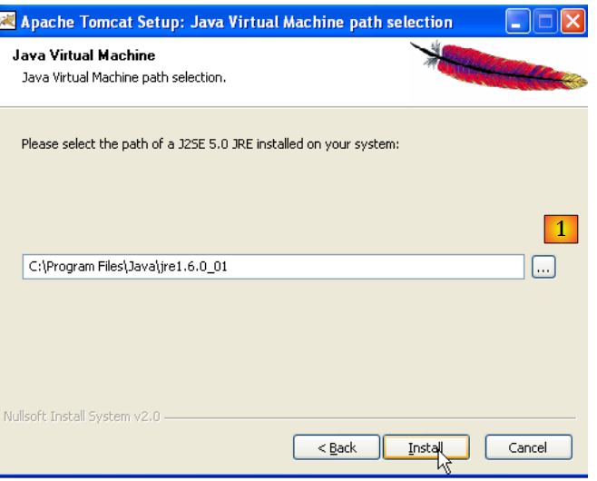 |
Tomcat 5.x heeft JRE 1.5 nodig. Normaal gesproken vindt het de versie die op uw computer is geïnstalleerd. Hierboven is het opgegeven pad dat van JRE 1.6, gedownload in paragraaf 5.1. Als er geen JRE wordt gevonden, geef dan de hoofdmap aan met behulp van de knop [1]. Gebruik daarna de knop [Install] om Tomcat 5.x te installeren ->

De knop [Finish] voltooit de installatie. De aanwezigheid van Tomcat wordt aangegeven door een pictogram rechts in de Windows-taakbalk:

Met een rechtermuisklik op dit pictogram krijgt u toegang tot de opstart- en afsluitopdrachten van de server:

We gebruiken de optie [Stop service] om de webserver nu te stoppen:

Let op de verandering in de status van het pictogram. Dit pictogram kan uit de taakbalk worden verwijderd:

Tomcat is geïnstalleerd in de door de gebruiker gekozen map, die we voortaan <tomcat> zullen noemen. De mapstructuur van deze map voor de gedownloade versie Tomcat 5.5.23 is als volgt:

Door de installatie van Tomcat zijn er een aantal snelkoppelingen in het menu [Démarrer] toegevoegd. We gebruiken de onderstaande link [Monitor] om het hulpprogramma voor het starten en stoppen van Tomcat te starten:

We zien dan het eerder getoonde pictogram:
De Tomcat-monitor kan worden geactiveerd door op dit pictogram te dubbelklikken:
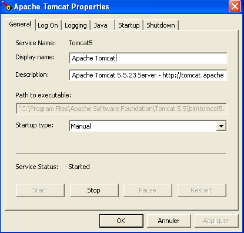
Met de knoppen [Start - Stop - Pause] - Restart kunnen we de server starten, stoppen en opnieuw opstarten. We starten de server met [Start] en roepen vervolgens in een browser de URL http://localhost:8080 op. We zouden een pagina moeten zien die er ongeveer zo uitziet:

Via de onderstaande links kun je controleren of Tomcat correct is geïnstalleerd:

Alle links op de pagina [http://localhost:8080] zijn interessant en de lezer wordt uitgenodigd om ze te verkennen. We zullen later terugkomen op de links waarmee de op de server geïmplementeerde webapplicaties kunnen worden beheerd:

5.3.2. Implementatie van een webapplicatie op de Tomcat-server
5.3.3. Implementatie
Een webapplicatie moet aan bepaalde regels voldoen om in een servletcontainer te kunnen worden geïmplementeerd. Stel dat <webapp> de map van een webapplicatie is. Een webapplicatie bestaat uit:
in de map <webapp>\WEB-INF\classes | |
in de map <webapp>\WEB-INF\lib | |
in de map <webapp> of submappen |
De webapplicatie wordt geconfigureerd via een bestand XML: <webapp>\WEB-INF\web.xml. Dit bestand is niet nodig in eenvoudige gevallen, met name wanneer de webapplicatie alleen statische bestanden bevat. Laten we het volgende bestand HTML aanmaken:
<html>
<head>
<title>Application exemple</title>
</head>
<body>
Application exemple active ....
</body>
</html>
en slaan we het op in een map:
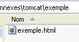
Als we dit bestand in een browser laden, krijgen we de volgende pagina te zien:

De door de browser weergegeven URL laat zien dat de pagina niet door een webserver is geleverd, maar rechtstreeks door de browser is geladen. We willen nu dat deze beschikbaar is via de Tomcat-webserver.
Laten we teruggaan naar de mappenstructuur van de map <tomcat>:
De configuratie van de webapplicaties die op de Tomcat-server zijn geïmplementeerd, gebeurt met behulp van XML-bestanden die in de map [<tomcat>\conf\Catalina\localhost] zijn geplaatst:
 |  |
Deze XML-bestanden kunnen handmatig worden aangemaakt, aangezien hun structuur eenvoudig is. In plaats van deze aanpak te volgen, gaan we gebruikmaken van de webtools die Tomcat ons biedt.
5.3.4. Beheer van de Tomca
Op de startpagina http://localhost:8080 biedt de server ons links om deze te beheren:

Via de link [Tomcat Administration] kunnen we de bronnen configureren die Tomcat ter beschikking stelt aan de webapplicaties die erin zijn geïmplementeerd, bijvoorbeeld een pool van verbindingen met een database. Laten we de link volgen:

De pagina die we te zien krijgen, geeft aan dat voor het beheer van Tomcat 5.x een specifiek pakket nodig is, genaamd "admin". Laten we teruggaan naar de Tomcat-website [http://tomcat.apache.org/download-55.cgi]:

Laten we het zip-bestand met de naam [Administration Web Application] downloaden en vervolgens uitpakken. De inhoud is als volgt:

De map [admin] moet worden gekopieerd naar [<tomcat>\server\webapps], waarbij <tomcat> de map is waarin Tomcat 5.x is geïnstalleerd:

De map [localhost] bevat een bestand [admin.xml] dat moet worden gekopieerd naar [<tomcat>\conf\Catalina\localhost]:

Sluit Tomcat af en start het opnieuw op als het actief was. Vraag vervolgens met een browser de startpagina van de webserver opnieuw op:

Volg de link [Tomcat Administration]. We krijgen een inlogpagina te zien (om deze te krijgen, kan het nodig zijn de pagina te verversen):
 |  |
Hier moeten we de gegevens invoeren die we tijdens de installatie van Tomcat hebben opgegeven. In ons geval voeren we de combinatie admin / admin in. De knop [Login] brengt ons naar de volgende pagina:

Op deze pagina kan de Tomcat-beheerder
- gegevensbronnen (Data Sources) in te stellen,
- de informatie die nodig is voor het verzenden van e-mail (Mail Sessions),
- omgevingsgegevens die voor alle applicaties toegankelijk zijn (Environment Entries),
- Tomcat-gebruikers/beheerders te beheren (Users),
- gebruikersgroepen te beheren (Groups),
- rollen definiëren (= wat een gebruiker wel of niet mag doen),
- het definiëren van de kenmerken van de door de server geïmplementeerde webapplicaties (Service Catalina)
Laten we de bovenstaande link [Roles] volgen:

Met een rol kunt u bepalen wat een gebruiker of een groep gebruikers wel of niet mag doen. Aan een rol worden bepaalde rechten toegekend. Elke gebruiker is gekoppeld aan een of meer rollen en beschikt over de rechten die bij deze rollen horen. De onderstaande rol [manager] geeft het recht om de in Tomcat geïmplementeerde webapplicaties te beheren (implementeren, starten, stoppen, verwijderen). We gaan een gebruiker [manager] aanmaken die we aan de rol [manager] zullen toewijzen, zodat deze de Tomcat-applicaties kan beheren. Hiervoor volgen we de link [Users] op de beheerpagina:

We zien dat er al een aantal gebruikers is. We gebruiken de optie [Create New User] om een nieuwe gebruiker aan te maken:

We geven de gebruiker 'manager' het wachtwoord 'manager' en wijzen hem de rol 'manager' toe. We gebruiken de knop [Save] om deze toevoeging te bevestigen. De nieuwe gebruiker verschijnt in de lijst met gebruikers:

Deze nieuwe gebruiker wordt toegevoegd aan het bestand [<tomcat>\conf\tomcat-users.xml]:
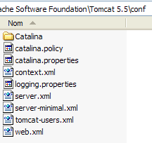
met de volgende inhoud:
<?xml version='1.0' encoding='utf-8'?>
<tomcat-users>
<role rolename="tomcat"/>
<role rolename="role1"/>
<role rolename="manager"/>
<role rolename="admin"/>
<user username="tomcat" password="tomcat" roles="tomcat"/>
<user username="role1" password="tomcat" roles="role1"/>
<user username="both" password="tomcat" roles="tomcat,role1"/>
<user username="manager" password="manager" fullName="" roles="manager"/>
<user username="admin" password="admin" roles="admin,manager"/>
</tomcat-users>
- regel 10: de gebruiker [manager] die is aangemaakt
Een andere manier om gebruikers toe te voegen is door dit bestand rechtstreeks te bewerken. Dit is met name de manier waarop u te werk moet gaan als u toevallig het wachtwoord van de beheerder ‘admin’ of ‘manager’ bent vergeten.
5.3.5. Beheer van geïmplementeerde webapplicaties
Laten we nu teruggaan naar de startpagina [http://localhost:8080] en de link [Tomcat Manager] volgen:

We komen dan op een authenticatiepagina terecht. We melden ons aan als manager / manager, c.a.d, de gebruiker met de rol [manager] die we zojuist hebben aangemaakt. Alleen een gebruiker met deze rol kan deze link namelijk gebruiken. Op regel 11 van [tomcat-users.xml] zien we dat de gebruiker [admin] ook de rol [manager] heeft. We zouden dus ook de authenticatie [admin / admin] kunnen gebruiken.

We krijgen een pagina te zien met een overzicht van de applicaties die momenteel in Tomcat zijn geïmplementeerd:

We kunnen een nieuwe applicatie toevoegen via de formulieren onderaan de pagina:

Hier willen we de voorbeeldapplicatie die we eerder hebben gebouwd, in Tomcat implementeren. Dat doen we als volgt:

/voorbeeld | de naam die wordt gebruikt om de webapplicatie die moet worden geïmplementeerd | |
C:\data\werk\2006-2007\eclipse\dvp-jpa\bijlagen\tomcat\voorbeeld | de map van de webapplicatie |
Om het bestand [C:\data\travail\2006-2007\eclipse\dvp-jpa\annexes\tomcat\exemple\exemple.html] te verkrijgen, vragen we Tomcat om de bestanden URL en [http://localhost:8080/exemple/exemple.html]. De context dient om de hoofdmap van de geïmplementeerde webapplicatie een naam te geven. We gebruiken de knop [Deploy] om de applicatie te implementeren. Als alles goed verloopt, krijgen we de volgende responspagina te zien:

en de nieuwe applicatie verschijnt in de lijst met geïmplementeerde applicaties:
 |
Laten we de regel in de bovenstaande context /voorbeeld eens toelichten:
link naar http://localhost:8080/exemple | |
hiermee start je de applicatie | |
hiermee kun je de applicatie afsluiten | |
hiermee kun je de applicatie opnieuw laden. Dit is bijvoorbeeld nodig wanneer je bepaalde klassen aan de applicatie hebt toegevoegd, bepaalde klassen aan de applicatie hebt toegevoegd, gewijzigd of verwijderd. | |
verwijdering van de context [/exemple]. De applicatie verdwijnt uit de lijst met beschikbare applicaties. |
Nu onze voorbeeldapplicatie is geïmplementeerd, kunnen we enkele tests uitvoeren. We roepen de pagina [exemple.html] op via de URL [http://localhost:8080/exemple/vues/exemple.html]:
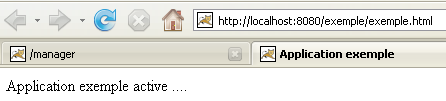
Een andere manier om een webapplicatie op de Tomcat-server te implementeren, is door de gegevens die we via de webinterface hebben opgegeven, op te nemen in een bestand [contexte].xml in de map [<tomcat>\conf\Catalina\localhost], waarbij [contexte] de naam van de webapplicatie is.
Laten we teruggaan naar de beheerinterface van Tomcat:

Laten we de applicatie [/exemple] samen met de bijbehorende link [Undeploy] verwijderen:

De applicatie [/exemple] staat niet meer in de lijst met actieve applicaties. Laten we nu het volgende bestand [exemple.xml] definiëren:
Het bestand XML bestaat uit één enkele <Context>-tag waarvan het attribuut docBase de map definieert die de te implementeren webapplicatie bevat. Laten we dit bestand in <tomcat>\conf\Catalina\localhost plaatsen:

Stop Tomcat indien nodig en start het opnieuw op, en bekijk vervolgens de lijst met actieve applicaties via de Tomcat-beheerder:

De applicatie [/exemple] is inderdaad aanwezig. Roepen we met een browser de URL op:
[http://localhost:8080/exemple/exemple.html]:

Een op deze manier geïmplementeerde webapplicatie kan op dezelfde manier als eerder uit de lijst met geïmplementeerde applicaties worden verwijderd, via de link [Undeploy]:
In dat geval wordt het bestand [exemple.xml] automatisch verwijderd uit de map [<tomcat>\conf\Catalina\localhost].
Ten slotte kan men, om een webapplicatie binnen Tomcat te implementeren, de context ervan ook definiëren in het bestand [<tomcat>\conf\server.xml]. We zullen hier niet verder op ingaan.
5.3.6. Webapplicatie met startpagina
Wanneer we de URL [http://localhost:8080/exemple/] opvragen, krijgen we het volgende antwoord:

Bij sommige eerdere versies van Tomcat zouden we de inhoud van de fysieke map van de applicatie [/exemple] hebben gekregen.
We kunnen ervoor zorgen dat, wanneer de context wordt opgevraagd, er een zogenaamde startpagina wordt weergegeven. Hiervoor maken we een bestand [web.xml] aan dat we in de map <voorbeeld>\WEB-INF plaatsen, waarbij <voorbeeld> de fysieke map van de webapplicatie [/exemple] is. Dit bestand ziet er als volgt uit:
- regels 2-5: de root-tag <web-app> met attributen die zijn gekopieerd en geplakt uit het bestand [web.xml] van de Tomcat-applicatie [/admin] (<tomcat>/server/webapps/admin/WEB-INF/web.xml).
- regel 7: de weergavenaam van de webapplicatie. Dit is een vrije naam waarvoor minder beperkingen gelden dan voor de contextnaam van de applicatie. Je kunt er bijvoorbeeld spaties in gebruiken, wat bij de contextnaam niet mogelijk is. Deze naam wordt bijvoorbeeld weergegeven door de Tomcat-beheerder:

- regel 8: beschrijving van de webapplicatie. Deze tekst kan vervolgens programmatisch worden opgehaald.
- regels 9-11: de lijst met welkomstbestanden. De tag <welcome-file-list> wordt gebruikt om de lijst met weergaven te definiëren die moeten worden getoond wanneer een client de applicatiecontext opvraagt. Er kunnen meerdere weergaven zijn. De eerste die wordt gevonden, wordt aan de client getoond. Hier hebben we er maar één: [/exemple.html]. Wanneer een client dus de URL [/exemple] opvraagt, wordt in feite de URL [/exemple/exemple.html] geleverd.
Laten we dit bestand [web.xml] opslaan in <voorbeeld>\WEB-INF:

Als Tomcat nog steeds actief is, kun je het dwingen de webapplicatie [/exemple] opnieuw te laden via de link [Recharger]:

Tijdens deze "herlaad"-bewerking leest Tomcat het bestand [web.xml] dat in [<exemple>\WEB-INF] is opgenomen opnieuw in, indien het bestaat. Dat is hier het geval. Als Tomcat was gestopt, start u het opnieuw op.
Laten we met een browser het bestand URL en [http://localhost:8080/exemple/] opvragen:

Het mechanisme van de hostbestanden heeft gewerkt.
5.3.7. Integratie van Tomcat in Eclipse
We gaan Tomcat nu in Eclipse integreren. Deze integratie maakt het mogelijk om:
- Tomcat vanuit Eclipse te starten en te stoppen
- Java-webapplicaties te ontwikkelen en deze op Tomcat uit te voeren. Dankzij de Eclipse/Tomcat-integratie kunt u de uitvoering van de applicatie traceren (debuggen), inclusief de uitvoering van de Java-klassen (servlets) die door Tomcat worden uitgevoerd.
Laten we Eclipse starten en vervolgens de weergave [Servers] openen:
 |
- in [1]: Window/Show View/Other
- in [2]: selecteer de weergave [Servers] en voer [OK] uit
 |
- in [1], we hebben een nieuwe weergave [Servers]
- in [2], klik met de rechtermuisknop op de weergave en vraag om een nieuwe server aan te maken: [New/Server]
- in [3], kies je de server [Tomcat 5.5] en maak je vervolgens [Next]
 |
- naar [4], wijs de installatiemap van Tomcat 5.5 aan
- in [5] geef je aan dat er op dit moment geen Eclipse/Tomcat-projecten zijn. Je voert [Finish] uit
Het toevoegen van de server komt tot uiting door het toevoegen van een map in de projectverkenner van Eclipse [6] en het verschijnen van een server in de weergave [servers] [7]:
 |
In de weergave [Servers] verschijnen alle geregistreerde servers, hier alleen de Tomcat 5.5-server die we zojuist hebben geregistreerd. Met een rechtermuisklik hierop krijgt u toegang tot de opdrachten om de server te starten, te stoppen of opnieuw op te starten:

Hierboven starten we de server. Tijdens het opstarten worden er een aantal logberichten geschreven in de weergave [Console]:
Het duurt even voordat je deze logbestanden begrijpt. We zullen er voorlopig niet verder op ingaan. Het is echter belangrijk om te controleren of er geen fouten bij het laden van contexten worden gemeld. Wanneer de Tomcat-/Eclipse-server wordt gestart, probeert deze namelijk de context van de applicaties die hij beheert te laden. Het laden van de context van een applicatie houdt in dat het bijbehorende bestand [web.xml] wordt verwerkt en dat een of meer klassen worden geladen die de context initialiseren. Daarbij kunnen verschillende soorten fouten optreden:
- het bestand [web.xml] bevat syntactische fouten. Dit is de meest voorkomende fout. Het wordt aangeraden om een tool te gebruiken die de geldigheid van een XML-document kan controleren tijdens het samenstellen ervan.
- bepaalde te laden klassen zijn niet gevonden. Er wordt naar deze klassen gezocht in [WEB-INF/classes] en [WEB-INF/lib]. Over het algemeen moet worden gecontroleerd of de benodigde klassen aanwezig zijn en of de spelling van de klassen die in het bestand [web.xml] zijn gedeclareerd, correct is.
De server die vanuit Eclipse wordt gestart, heeft niet dezelfde configuratie als de server die in paragraaf 5.3 is geïnstalleerd. Om dit te controleren, roepen we de URL [http://localhost:8080] op met een browser:

Dit antwoord betekent niet dat de server niet werkt, maar dat de opgevraagde bron / niet beschikbaar is. Met de in Eclipse geïntegreerde Tomcat-server zullen deze bronnen webprojecten zijn. Dat zullen we later zien. Laten we Tomcat voorlopig even stoppen:

De vorige werkwijze kan worden gewijzigd. Laten we teruggaan naar het venster [Servers] en dubbelklikken op de Tomcat-server om de eigenschappen ervan te openen:
 | 1  |
Het selectievakje [1] is verantwoordelijk voor de vorige werkwijze. Wanneer dit vakje is aangevinkt, worden de in Eclipse ontwikkelde webapplicaties niet in de configuratiebestanden van de bijbehorende Tomcat-server gedeclareerd, maar in aparte configuratiebestanden. Hierdoor zijn de standaard gedefinieerde applicaties binnen de Tomcat-server niet beschikbaar: [admin] en [manager], twee nuttige applicaties. Daarom gaan we het selectievakje [1] uitschakelen en Tomcat opnieuw opstarten:
 | 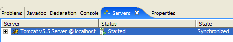 |
Als dit is gebeurd, roepen we de URL [http://localhost:8080] op met een browser:
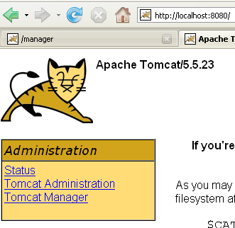
We zien hier dezelfde werkwijze als beschreven in paragraaf 5.3.4.
In onze voorgaande voorbeelden hebben we een browser buiten Eclipse gebruikt. Je kunt ook een browser binnen Eclipse gebruiken:

Hierboven selecteren we de interne browser. Om deze vanuit Eclipse te starten, kun je het volgende pictogram gebruiken:

De browser die daadwerkelijk wordt gestart, is degene die is geselecteerd via de optie [Window -> Web Browser]. Hier krijgen we de interne browser te zien:
1

Laten we indien nodig Tomcat vanuit Eclipse starten en in [1] de URL [http://localhost:8080] opvragen:

Laten we de link [Tomcat Manager] volgen:

Er wordt gevraagd om het paar [login / mot de passe] dat nodig is om toegang te krijgen tot de applicatie [manager]. Op basis van de Tomcat-configuratie die we eerder hebben uitgevoerd, kunnen we [admin / admin] of [manager / manager] invoeren. Vervolgens krijgen we de lijst met geïmplementeerde applicaties te zien:
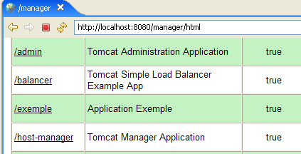
5.4. De SGBD- ert Firebird
5.4.1. SGBD Firebird
De SGBD Firebird is beschikbaar via de URL [http://www.firebirdsql.org/]:
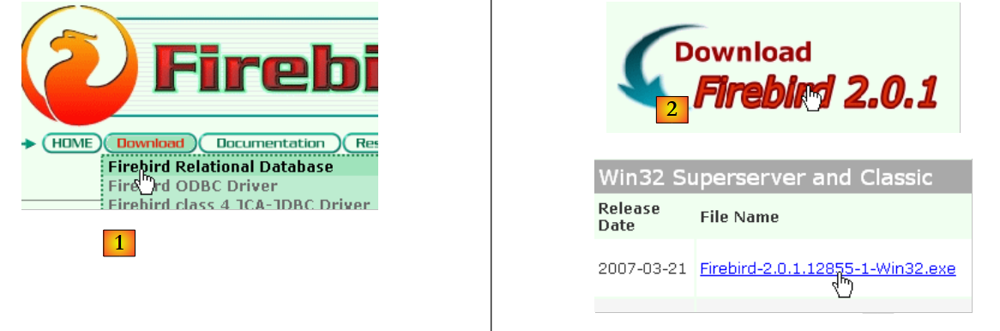 |
- in [1]: gebruik de optie [Download.Firebird Relational Database]
- in [2]: hiermee wordt de gewenste versie van Firebird aangeduid
- in [3]: het installatiebestand wordt gedownload
Zodra het bestand [3] is gedownload, dubbelklikt men erop om Firebird SGBD te installeren. SGBD wordt geïnstalleerd in een map waarvan de inhoud er ongeveer als volgt uitziet:

De binaire bestanden bevinden zich in de map [bin]:

hiermee kan SGBD worden gestart/gestopt | |
clientprogramma waarmee databases kunnen worden beheerd |
Let op: standaard heet de beheerder van SGBD [SYSDBA] en is zijn wachtwoord [masterkey]. Er zijn menu's geïnstalleerd in [Démarrer]:

Met de optie [Firebird Guardian] kun je SGBD starten/stoppen. Na het starten blijft het pictogram van SGBD in de Windows-taakbalk staan:
 |
Om Firebird-databases aan te maken en te beheren met de opdrachtregelclient [isql.exe], is het noodzakelijk de documentatie te lezen die bij het product wordt geleverd en die toegankelijk is via de Firebird-snelkoppelingen in [Démarrer/Programmes/Firebird 2.0].
Een snelle manier om met Firebird te werken en de taal SQL te leren, is het gebruik van een grafische client. Een voorbeeld hiervan is IB-Expert, dat in de volgende paragraaf wordt beschreven.
5.4.2. Werken met Firebird SGBD met IB- Expert
De hoofdwebsite van IB-Expert is [http://www.ibexpert.com/].
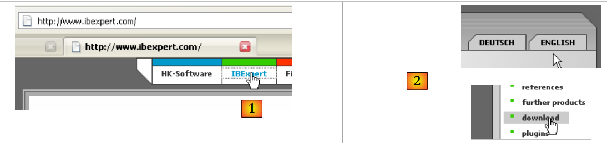 |
 |
- in [1] selecteert u IBExpert
- bij [2] selecteert men de download nadat men eventueel de gewenste taal heeft gekozen
- in [3] selecteert men de zogenaamde "persoonlijke" versie, omdat deze gratis is. Men moet zich echter wel registreren op de website.
- bij [4] download je IBExpert
IBExpert wordt geïnstalleerd in een map die er ongeveer zo uitziet:
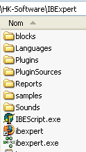
Het uitvoerbare bestand is [ibexpert.exe]. Er is normaal gesproken een snelkoppeling beschikbaar in het menu [Démarrer]:

Zodra IBExpert is gestart, verschijnt het volgende venster:

Laten we de optie [Database/Create Database] gebruiken om een database aan te maken:

kan bijvoorbeeld [local] of [remote] zijn. Hier staat onze server op dezelfde machine als [IBExpert]. We kiezen dus voor [local] | |
de knop van het type [dossier] in de keuzelijst om het databasebestand aan te wijzen. Firebird zet de gehele database in één enkel bestand. Dat is een van de voordelen ervan. Je verplaatst de database van de ene computer naar de andere door het bestand simpelweg te kopiëren. Het achtervoegsel [.fdb] wordt automatisch toegevoegd. | |
SYSDBA is de standaardbeheerder van de huidige Firebird-distributies | |
masterkey is het wachtwoord van de beheerder SYSDBA van de huidige Firebird-distributies | |
het te gebruiken dialect SQL | |
als het vakje is aangevinkt, zal IBExpert een link naar de aangemaakte database weergeven nadat deze is aangemaakt |
Als u op de knop [OK] voor het aanmaken klikt, krijgt u de volgende waarschuwing te zien:

dan betekent dit dat u Firebird niet hebt gestart. Start het programma op. Er verschijnt een nieuw venster:

Te gebruiken lettertypefamilie. Het wordt aanbevolen om in de vervolgkeuzelijst de familie [ISO-8859-1] te selecteren uit de vervolgkeuzelijst, zodat u Latijnse letters met accenten kunt gebruiken. |
[IBExpert] kan verschillende van Interbase afgeleide SGBD-versies verwerken. Neem de versie van Firebird die u hebt geïnstalleerd. |
Zodra dit nieuwe venster door [Register] is bevestigd, verschijnt het resultaat [1] in het venster [Database Explorer]. Dit venster kan per ongeluk worden gesloten. Om het opnieuw te openen, voer je [2] uit:
 |
Om toegang te krijgen tot de aangemaakte database, volstaat het om op de link ervan te dubbelklikken. IBExpert toont dan een boomstructuur die toegang geeft tot de eigenschappen van de database:

5.4.3. Een gegevenstabel aanmaken
Laten we een tabel aanmaken. Klik met de rechtermuisknop op [Tables] (zie bovenstaand venster) en kies de optie [New Table]. Het venster voor het instellen van de eigenschappen van de tabel verschijnt:
 |
Laten we beginnen met de tabel de naam [ARTICLES] te geven via het invoerveld [1]:

Gebruik het invoerveld [2] om een primaire sleutel [ID] te definiëren:

Een veld wordt tot primaire sleutel gemaakt door te dubbelklikken op het veld [PK] (Primary Key). Laten we velden toevoegen met de knop boven [3]:

Zolang we onze definitie niet hebben ‘gecompileerd’, wordt de tabel niet aangemaakt. Gebruik de knop [Compile] hierboven om de definitie van de tabel te voltooien. IBExpert bereidt de query’s SQL voor om de tabel te genereren en vraagt om bevestiging:

Interessant genoeg toont IBExpert de query's SQL die het heeft uitgevoerd. Hierdoor kun je niet alleen de taal SQL leren, maar ook het eventueel gebruikte, mogelijk eigen dialect SQL. Met de knop [Commit] kan de lopende transactie worden bevestigd, met [Rollback] kan deze worden geannuleerd. Hier accepteren we deze met [Commit]. Zodra dit is gebeurd, voegt IBExpert de aangemaakte tabel toe aan de boomstructuur van onze database:

Door op de tabel te dubbelklikken, krijgen we toegang tot de eigenschappen ervan:

Via het venster [Constraints] kunnen we nieuwe integriteitsregels aan de tabel toevoegen. Laten we dit venster openen:

We zien hier de primaire sleutelbeperking die we hebben aangemaakt. We kunnen nog andere beperkingen toevoegen:
- vreemde sleutels [Foreign Keys]
- veldintegriteitsbeperkingen [Checks]
- veld-uniciteitsbeperkingen [Uniques]
Let op:
- de velden [ID, PRIX, STOCKACTUEL, STOKMINIMUM] moeten >0 zijn
- het veld [NOM] moet niet-leeg en uniek zijn
Laten we het paneel [Checks] openen en met de rechtermuisknop klikken in het gedeelte voor het definiëren van beperkingen om een nieuwe beperking toe te voegen:

Laten we de gewenste beperkingen definiëren:

Merk op dat de beperking [NOM<>''] hierboven twee apostrofs gebruikt in plaats van aanhalingstekens. Compileren we deze beperkingen met de knop [Compile] hierboven:

Ook hier geeft IBExpert duidelijk aan welke query's (SQL) het heeft uitgevoerd. Laten we nu naar het paneel [Constraints/Uniques] gaan om aan te geven dat de naam uniek moet zijn. Dit betekent dat dezelfde naam niet twee keer in de tabel mag voorkomen.

Laten we de beperking definiëren:
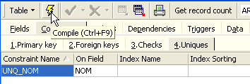
Laten we deze vervolgens compileren. Als dat gedaan is, openen we het paneel [DDL] (Data Definition Language) van de tabel [ARTICLES]:

Dit paneel geeft de code SQL weer voor het genereren van de tabel met al zijn beperkingen. We kunnen deze code opslaan in een script om hem later opnieuw uit te voeren:
SET SQL DIALECT 3;
SET NAMES ISO8859_1;
CREATE TABLE ARTICLES (
ID INTEGER NOT NULL,
NOM VARCHAR(20) NOT NULL,
PRIX DOUBLE PRECISION NOT NULL,
STOCKACTUEL INTEGER NOT NULL,
STOCKMINIMUM INTEGER NOT NULL
);
ALTER TABLE ARTICLES ADD CONSTRAINT CHK_ID check (ID>0);
ALTER TABLE ARTICLES ADD CONSTRAINT CHK_PRIX check (PRIX>0);
ALTER TABLE ARTICLES ADD CONSTRAINT CHK_STOCKACTUEL check (STOCKACTUEL>0);
ALTER TABLE ARTICLES ADD CONSTRAINT CHK_STOCKMINIMUM check (STOCKMINIMUM>0);
ALTER TABLE ARTICLES ADD CONSTRAINT CHK_NOM check (NOM<>'');
ALTER TABLE ARTICLES ADD CONSTRAINT UNQ_NOM UNIQUE (NOM);
ALTER TABLE ARTICLES ADD CONSTRAINT PK_ARTICLES PRIMARY KEY (ID);
5.4.4. Gegevens invoeren in een tabel
Het is nu tijd om gegevens in de tabel [ARTICLES] in te voeren. Hiervoor gebruiken we het bijbehorende paneel [Data]:
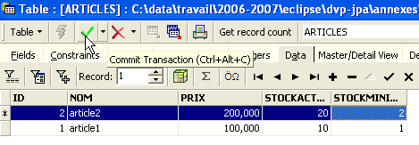
De gegevens worden ingevoerd door te dubbelklikken op de invoervelden van elke rij in de tabel. Met de knop [+] wordt een nieuwe rij toegevoegd, met de knop [-] wordt een rij verwijderd. Deze bewerkingen vinden plaats in een transactie die wordt bevestigd met de knop [Commit Transaction] (zie hierboven). Zonder deze bevestiging gaan de gegevens verloren.
5.4.5. De editor SQL van [IB-Expert]
Met de taal SQL (Structured Query Language) kan een gebruiker:
- tabellen aan te maken door het type gegevens dat erin wordt opgeslagen en de voorwaarden waaraan deze gegevens moeten voldoen te specificeren
- gegevens daarin in te voeren
- bepaalde gegevens te wijzigen
- andere gegevens te verwijderen
- de inhoud ervan te gebruiken om informatie te verkrijgen
- ...
Met IBExpert kan een gebruiker de bewerkingen 1 tot en met 4 grafisch uitvoeren. Dat hebben we zojuist gezien. Wanneer de database veel tabellen bevat met elk honderden rijen, is er behoefte aan informatie die visueel moeilijk te verkrijgen is. Stel bijvoorbeeld dat een onlinewinkel duizenden kopers per maand heeft. Alle aankopen worden in een database geregistreerd. Na zes maanden blijkt dat product „X” defect is. Men wil contact opnemen met alle mensen die het hebben gekocht, zodat ze het product kunnen terugsturen voor een gratis omruiling. Hoe vind je de adressen van deze kopers?
- Je kunt alle tabellen visueel doorlopen en naar deze kopers zoeken. Dat kost een paar uur.
- Men kan een opdracht SQL uitvoeren, die binnen enkele seconden de lijst met deze personen oplevert
De taal SQL is nuttig zodra
- de hoeveelheid gegevens in de tabellen groot is
- er veel tabellen zijn die onderling gekoppeld zijn
- de te verkrijgen informatie over meerdere tabellen is verspreid
- ...
We presenteren nu de editor SQL van IBExpert. Deze is toegankelijk via de optie [Tools/SQL Editor] of [F12]:

We krijgen dan toegang tot een geavanceerde query-editor SQL waarmee we met query's kunnen experimenteren. Laten we een query invoeren:

We voeren de query SQL uit met de knop [Execute] hierboven. We krijgen het volgende resultaat:

Hierboven toont het tabblad [Results] de resultatentabel van de opdracht SQL [Select]. Om een nieuwe opdracht SQL te geven, hoeft u alleen maar terug te gaan naar het tabblad [Edit]. Daar vindt u dan de opdracht SQL terug die is uitgevoerd.

Verschillende knoppen op de werkbalk zijn handig:
- met de knop [New Query] kun je naar een nieuwe aanvraag SQL gaan:

Je krijgt dan een lege bewerkingspagina te zien:
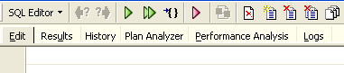
Vervolgens kun je een nieuwe opdracht invoeren: SQL:

en deze uitvoeren:

Laten we teruggaan naar het tabblad [Edit]. De verschillende uitgevoerde opdrachten SQL worden opgeslagen door [IBExpert]. Met de knop [Previous Query] kunt u terugkeren naar een eerder verzonden opdracht SQL:
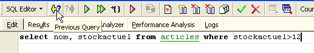
Je keert dan terug naar de vorige aanvraag:

Met de knop [Next Query] gaat u naar de volgende opdracht SQL:
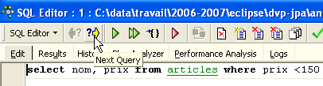
Vervolgens vinden we de opdracht SQL terug, die in de lijst met opgeslagen opdrachten SQL volgt:

Met de knop [Delete Query] kunt u een opdracht SQL uit de lijst met opgeslagen opdrachten verwijderen:

Met de knop [Clear Current Query] kunt u de inhoud van de editor voor de weergegeven opdracht SQL wissen:

Met de knop [Commit] kunt u de wijzigingen in de database definitief opslaan:

Met de knop [RollBack] kunt u de wijzigingen ongedaan maken die sinds de laatste [Commit] in de database zijn aangebracht. Als er sinds het inloggen op de database geen [Commit] is uitgevoerd, worden de wijzigingen die sinds deze verbinding zijn aangebracht ongedaan gemaakt.

Laten we een voorbeeld nemen. Voeg een nieuwe rij toe aan de tabel:
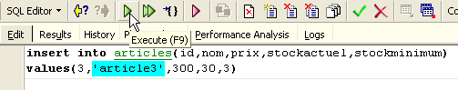
De opdracht SQL wordt uitgevoerd, maar er verschijnt niets op het scherm. We weten niet of de invoeging is gelukt. Om dat te controleren, voeren we de opdracht SQL uit, na [New Query]:

We krijgen met [Execute] het volgende resultaat:

De rij is dus inderdaad ingevoegd. Laten we de inhoud van de tabel nu op een andere manier bekijken. Dubbelklik op de tabel [ARTICLES] in de database-explorer:

We krijgen de volgende tabel te zien:

Met de pijlknop hierboven kun je de tabel vernieuwen. Na het vernieuwen verandert de bovenstaande tabel niet. Het lijkt alsof de nieuwe rij niet is ingevoegd. Laten we teruggaan naar de editor SQL (F12) en vervolgens de opdracht SQL, die is gegenereerd met de knop [Commit], bevestigen:

Als dit is gebeurd, gaan we terug naar de tabel [ARTICLES]. We zien dat er niets is veranderd, zelfs niet bij gebruik van de knop [Refresh]:

Laten we hierboven het tabblad [Fields] openen en vervolgens teruggaan naar het tabblad [Data]. Deze keer wordt de ingevoegde regel correct weergegeven:
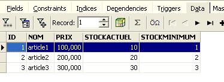
Wanneer de uitvoering van de verschillende opdrachten SQL begint, opent de editor een zogenaamde transactie in de database. De wijzigingen die door deze opdrachten SQL van de editor SQL worden aangebracht, zijn alleen zichtbaar zolang men in dezelfde editor SQL blijft (men kan er meerdere openen). Het is alsof de editor SQL niet op de daadwerkelijke database werkt, maar op een eigen kopie daarvan. In werkelijkheid verloopt het niet precies op deze manier, maar dit beeld kan ons helpen het begrip ‘transactie’ te begrijpen. Alle wijzigingen die tijdens een transactie in de kopie worden aangebracht, zijn pas zichtbaar in de daadwerkelijke database wanneer ze zijn gevalideerd door een [Commit Transaction]. De lopende transactie is dan beëindigd en er begint een nieuwe transactie.
Wijzigingen die tijdens een transactie zijn aangebracht, kunnen worden ongedaan gemaakt met een bewerking genaamd [Rollback]. Laten we het volgende eens uitproberen. We starten een nieuwe transactie (het volstaat om [Commit] uit te voeren op de huidige transactie) met de volgende opdracht SQL:

Laten we deze opdracht uitvoeren, die alle rijen uit de tabel [ARTICLES] verwijdert, en vervolgens [New Query] uitvoeren, de nieuwe opdracht SQL:
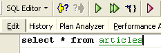
We krijgen het volgende resultaat:

Alle rijen zijn verwijderd. Laten we niet vergeten dat dit is gedaan op een kopie van de tabel [ARTICLES]. Om dit te controleren, dubbelklikken we op de tabel [ARTICLES] hieronder:

en bekijken we het tabblad [Data]:

Zelfs als we de knop [Refresh] gebruiken of naar het tabblad [Fields] gaan om vervolgens terug te keren naar het tabblad [Data], verandert de bovenstaande inhoud niet. Dit is al uitgelegd. We bevinden ons in een andere transactie die met een eigen kopie werkt. Laten we nu teruggaan naar de editor SQL (F12) en de knop [RollBack] gebruiken om de verwijderde regels ongedaan te maken:

We worden gevraagd om te bevestigen:

Bevestig dit. De editor SQL bevestigt dat de wijzigingen zijn ongedaan gemaakt:

Laten we het bovenstaande verzoek SQL nogmaals uitvoeren om dit te controleren. We zien dat de regels die waren verwijderd, weer terug zijn:

De bewerking [Rollback] heeft de kopie waaraan de editor SQL werkt, teruggebracht naar de toestand waarin deze zich aan het begin van de transactie bevond.
5.4.6. Een Firebird-database exporteren naar een SQL-script
Wanneer men met verschillende SGBD-processen werkt, zoals het geval is in de tutorial „Java 5-persistentie in de praktijk”, is het handig om een database vanuit een SGBD 1 naar een SQL-script te kunnen exporteren, om dit vervolgens in een SGBD 2 te importeren. Dit bespaart een aantal handmatige handelingen. Dit is echter niet altijd mogelijk, aangezien SGBD-bestanden vaak eigen SQL-extensies hebben.
Laten we eens bekijken hoe we de vorige [dbarticles]-database kunnen exporteren naar een SQL-script:
 |
- naar [1]: Extra / MetaData extraheren, om de metagegevens
- naar [2]: tabblad Meta-objecten
- in [3]: selecteer de tabel [Articles] waarvan je de structuur (metadata) wilt extraheren
- in [4]: om het links geselecteerde object naar rechts te verplaatsen
 |
- in [5]: de tabel [ARTICLES] zal deel uitmaken van de geëxtraheerde metagegevens
- in [6]: het tabblad [Table de données] dient om de tabellen te selecteren waarvan de inhoud moet worden geëxtraheerd (in de vorige stap werd de structuur van de tabel geëxporteerd)
- in [7]: om het links geselecteerde object naar rechts te verplaatsen
- in [8]: het verkregen resultaat
 |
- in [9]: via het tabblad [Options] kun je bepaalde parameters van de extractie configureren
- in [10]: we schakelen de opties uit die betrekking hebben op het genereren van de SQL-opdrachten waarmee verbinding met de database kan worden gemaakt. Deze zijn specifiek voor Firebird en daarom niet relevant voor ons.
- in [11]: op het tabblad [Sortie] kun je aangeven waar het script SQL
- in [12]: hier geef je aan dat het script in een bestand moet worden gegenereerd
- in [13]: hier geef je de locatie van dit bestand op
- in [14]: het genereren van het script SQL wordt gestart
Het gegenereerde script, zonder commentaar, ziet er als volgt uit:
Opmerking: de regels 1-2 zijn specifiek voor Firebird. Deze moeten uit het gegenereerde script worden verwijderd om een generiek SQL te verkrijgen.
5.4.7. -driver JDBC van Firebird
Een Java-programma heeft toegang tot gegevens uit een database via een JDBC-driver die specifiek is voor de gebruikte SGBD:
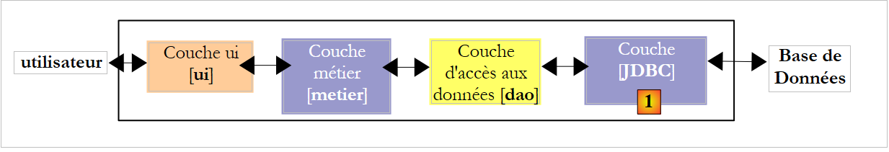 |
In een meerlaagse architectuur zoals hierboven wordt de driver JDBC [1] gebruikt door de laag [dao] (Data Access Object) om toegang te krijgen tot de gegevens in een database.
De Firebird-driver JDBC is beschikbaar via de URL waar Firebird is gedownload:
 |
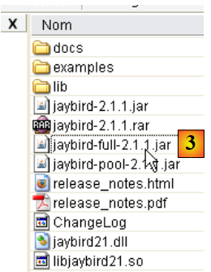 |
- in [1]: kies ervoor om de driver JDBC te downloaden
- in [2]: kies een stuurprogramma JDBC dat compatibel is met JDK 1.5
- in [3]: het archief met de driver JDBC is [jaybird-full-2.1.1.jar]. We pakken dit bestand uit. Het zal worden gebruikt voor alle voorbeelden met Firebird.
We plaatsen het in een map die we voortaan <jdbc> zullen noemen:

Om deze driver JDBC te controleren, gebruiken we Eclipse en de plug-in SQL Explorer (paragraaf 5.2.6). We beginnen met het declareren van de Firebird-driver JDBC:
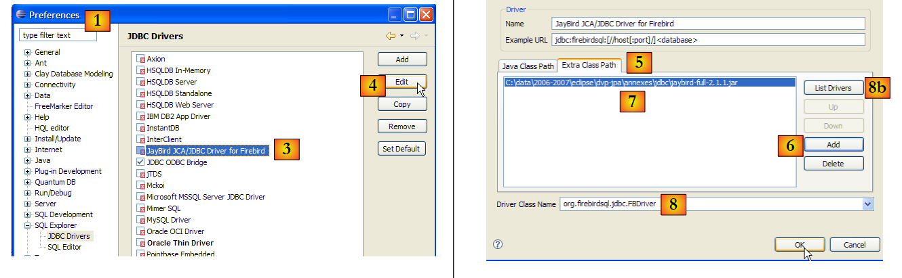 |
- in [1]: ga naar Window / Preferences
- naar [2]: kies de optie SQL Explorer / JDBC Drivers
- in [3]: kies het stuurprogramma JDBC voor Firebird
- in [4]: ga naar de configuratiefase
- in [5]: ga naar het tabblad [Extra Class Path]
- met [6]: het stuurprogramma-bestand JDBC selecteren. Zodra dit is gedaan, verschijnt het in [7]. Hier kiest men het stuurprogramma dat eerder in de map <jdbc> is geplaatst
- in [8]: de naam van de Java-klasse van de driver JDBC. Deze kan worden verkregen via de knop [8b].
- We voeren [OK] uit om de configuratie te valideren
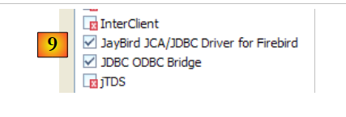 |
- in [9]: het Firebird-stuurprogramma JDBC is nu geconfigureerd. We kunnen het nu gaan gebruiken.
 |
- naar [1]: open een nieuw perspectief
- naar [2]: kies het perspectief [SQL Explorer]
 |
- in [3]: een nieuwe verbinding aanmaken
- in [4]: een naam toekennen
- in [5]: kies in de vervolgkeuzelijst de Firebird-driver JDBC
- in [6]: de URL opgeven van de database waarmee je verbinding wilt maken, in dit geval: [jdbc:firebirdsql:localhost/3050:C:\data\2006-2007\eclipse\dvp-jpa\annexes\jpa\jpa.fdb]. [jpa.fdb] is de database die eerder is aangemaakt met IBExpert.
- in [7]: de gebruikersnaam voor de verbinding, hier [sysdba], de beheerder van Firebird
- in [8]: zijn wachtwoord [masterkey]
- we bevestigen de verbindingsconfiguratie via [OK]
 |
- in [1]: dubbelklik op de naam van de verbinding die je wilt openen
- in [2]: log in (sysdba, masterkey)
- in [3]: de verbinding is geopend
- in [4]: de structuur van de database wordt weergegeven. Daarin is de tabel [ARTICLES] te zien. Deze wordt geselecteerd.
 |
- in [5]: in het venster [Database Detail] worden de details van het geselecteerde object weergegeven in [4], hier de tabel [ARTICLES]
- in [6]: het tabblad [Columns] toont de structuur van de tabel
- in [7]: het tabblad [Preview] toont de structuur van de tabel
In het venster [SQL Editor] kunnen query's SQL worden uitgevoerd:
 |
- in [1]: kies een open verbinding
- in [2]: voer de uit te voeren opdracht SQL in
- in [3]: voer deze uit
- in [4]: overzicht van de uitgevoerde opdracht
- in [5]: het resultaat
5.5. SGBD ert MySQL5
5.5.1. Installatie
De SGBD MySQL5 is beschikbaar via de url [http://dev.mysql.com/downloads/]:
 |
- in [1]: kies de gewenste versie
- op [2]: kies een Windows-versie
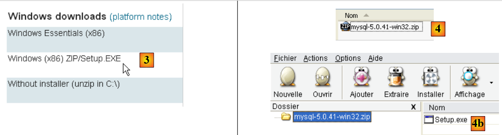 |
- naar [3]: kies de gewenste Windows-versie
- in [4]: het gedownloade zip-bestand bevat een uitvoerbaar bestand [Setup.exe] [4b] dat moet worden uitgepakt en uitgevoerd om MySQL5 te installeren
 |
- in [5]: kies een standaardinstallatie
- in [6]: zodra de installatie is voltooid, kun je de server configureren MySQL5
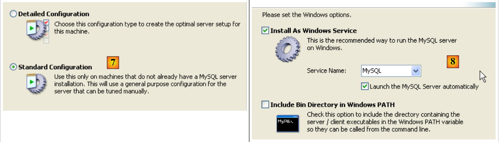 |
- in [7]: kies een standaardconfiguratie, die waarbij de minste vragen worden gesteld
- in [8]: de server MySQL5 wordt een Windows-service
 |
- in [9]: standaard is de serverbeheerder ‘root’ zonder wachtwoord. U kunt deze configuratie behouden of een nieuw wachtwoord voor ‘root’ instellen. Als de installatie van MySQL5 volgt op het verwijderen van een eerdere versie, kan deze bewerking mislukken. Er zijn dan minder mogelijkheden om dit ongedaan te maken.
- in [10]: er wordt gevraagd om de serverconfiguratie
De installatie van MySQL5 leidt tot het aanmaken van een map in [Démarrer / Programmes ]:

Je kunt [MySQL Server Instance Config Wizard] gebruiken om de server opnieuw te configureren:
 |
 |
 |
- naar [3]: we wijzigen het root-wachtwoord (hier root/root)
5.5.2. MySQL5 starten / stoppen
De server MySQL5 is geïnstalleerd als een Windows-service die automatisch wordt gestart; c.a.d wordt gestart zodra Windows opstart. Deze werkwijze is onpraktisch. We gaan dit wijzigen:
[Démarrer / Panneau de configuration / Performances et maintenance / Outils d'administration / Services ]:
 |
- in [1]: we dubbelklikken op [Services]
- naar [2]: we zien dat er een service met de naam [MySQL] aanwezig is, dat deze is gestart ([3]) en dat deze automatisch wordt gestart ([4]).
Om deze instelling te wijzigen, dubbelklikken we op de service [MySQL]:
 |
- in [1]: we stellen de dienst in op handmatig opstarten
- in [2]: we stoppen de dienst
- in [3]: we bevestigen de nieuwe configuratie van de service
Om de dienst MySQL handmatig te starten en te stoppen, kunnen we twee snelkoppelingen aanmaken:
 |
- in [1]: de snelkoppeling om MySQL5 te starten
- en [2]: de snelkoppeling om de service te stoppen
5.5.3. Beheerclients voor MySQL
Op de website van MySQL zijn beheerclients voor SGBD te vinden:
 |
- in [1]: kies [MySQL GUI Tools], dat verschillende grafische clients bevat waarmee je SGBD kunt beheren of gebruiken
- in [2]: kies de geschikte Windows-versie
 |
- in [3]: download een .msi-bestand om uit te voeren
- naar [4]: zodra de installatie is voltooid, verschijnen er nieuwe snelkoppelingen in de map [Menu Démarrer / Programmes / mySQL].
Start MySQL (via de snelkoppelingen die u hebt aangemaakt) en start vervolgens [MySQL Administrator] via het bovenstaande menu:
 |
- naar [1]: voer het wachtwoord van de root-gebruiker in (hier ‘root’)
- in [2]: we zijn ingelogd en zien dat MySQL actief is
5.5.4. Een gebruiker jpa en een database jpa aanmaken
In deze tutorial wordt gebruikgemaakt van MySQL5 met een database met de naam jpa en een gebruiker met dezelfde naam. We gaan deze nu aanmaken. Eerst de gebruiker:
 |
- in [1]: selecteer [User Administration]
- in [2]: klik met de rechtermuisknop in het gedeelte [User accounts] om een nieuwe gebruiker aan te maken
- in [3]: de gebruiker heet jpa en zijn wachtwoord is jpa
- in [4]: bevestig het aanmaken
- in [5]: de gebruiker [jpa] verschijnt in het venster [User Accounts]
Nu de database:
 |
- in [1]: de optie [Catalogs] selecteren
- in [2]: klik met de rechtermuisknop op het venster [Schemata] om een nieuw schema aan te maken (wijst naar een database)
- in [3]: het nieuwe schema wordt
- in [4]: het verschijnt in het venster [Schemata]
 |
- in [5]: selecteer het schema [jpa]
- in [6]: de objecten van het schema [jpa] verschijnen, met name de tabellen. Er zijn er nog geen. Met een rechtermuisklik kunt u er een aanmaken. We laten het aan de lezer over om dit te doen.
Laten we teruggaan naar de gebruiker [jpa] om hem alle rechten te geven op het schema [jpa]:
 |
- in [1], vervolgens [2]: selecteer de gebruiker [jpa]
- naar [3]: selecteer het tabblad [Schema Privileges]
- in [4]: selecteer het schema [jpa]
- in [5]: we verlenen de gebruiker [jpa] alle rechten op het schema [jpa]
 |
- naar [6]: we bevestigen de aangebrachte wijzigingen
Om te controleren of de gebruiker [jpa] met het schema [jpa] kan werken, sluiten we de beheerder MySQL af. We starten deze opnieuw op en loggen deze keer in onder de naam [jpa/jpa]:
 |
- in [1]: we loggen in (jpa/jpa)
- in [2]: de verbinding is tot stand gebracht en in [Schemata] zien we de schema’s waarvoor we rechten hebben. We zien het schema [jpa].
We gaan nu dezelfde tabel [ARTICLES] aanmaken als bij de Firebird-tabel SGBD, met behulp van het script SQL [schema-articles.sql] dat in paragraaf 5.4.6 is gegenereerd.
 |
- naar [1]: gebruik de toepassing [MySQL Query Browser]
- in [2], [3], [4]: log in (jpa / jpa / jpa)
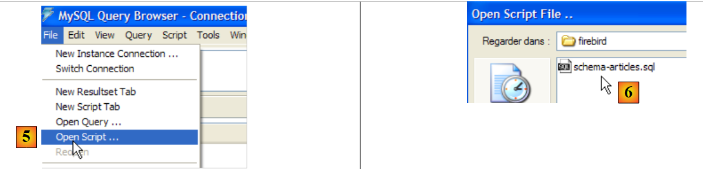 |
- naar [5]: open een script SQL om het uit te voeren
- in [6]: het in paragraaf 5.4.6 aangemaakte script [schema-articles.sql] aanwijzen.
 |
- in [7]: het geladen script
- in [8]: dit wordt uitgevoerd
- in [9]: de tabel [ARTICLES] is aangemaakt
5.5.5. -driver JDBC van MySQL5
De driver JDBC van MySQL kan op dezelfde plek worden gedownload als de SGBD:
 |
 |
- in [1]: kies het juiste stuurprogramma JDBC
- in [2]: kies de juiste Windows-versie
- in [3]: in het gedownloade zip-bestand is het Java-archief dat het stuurprogramma JDBC bevat, [mysql-connector-java-5.0.5-bin.jar]. We zullen dit uitpakken om het te gebruiken in de voorbeelden van de tutorial JPA.
We plaatsen het net als het vorige (paragraaf 5.4.7) in de map <jdbc>:
 |
Om deze driver JDBC te testen, gebruiken we Eclipse en de plug-in SQL Explorer. De lezer wordt verzocht de procedure te volgen die wordt uitgelegd in paragraaf 5.4.7. We tonen enkele relevante schermafbeeldingen:
 |
- in [1]: het archief van de driver JDBC is aangeduid als MySQL5
- in [2]: het stuurprogramma JDBC van MySQL5 is beschikbaar
 |
- naar [3]: definitie van de verbinding (gebruiker, wachtwoord)=(jpa, jpa)
- in [4]: de verbinding is actief
- in [5]: de verbonden database
5.6. De SGBD t de PostgreSQL
5.6.1. Installatie
De SGBD PostgreSQL is beschikbaar via de url [http://www.postgresql.org/download/]:
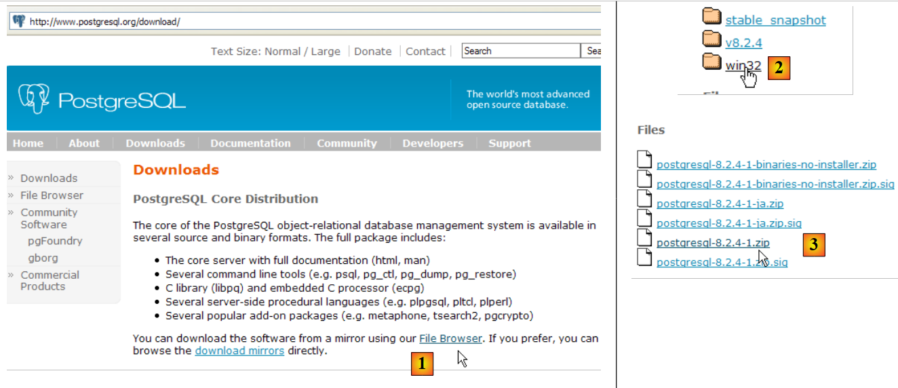 |
- in [1]: de downloadpagina's van PostgreSQL
- in [2]: kies een Windows-versie
- in [3]: een versie met installatieprogramma kiezen
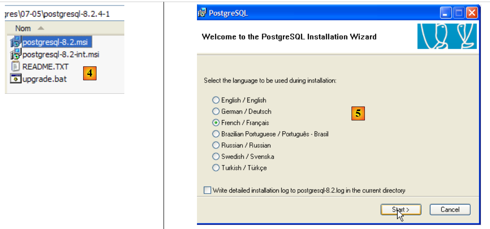 |
- in [4]: de inhoud van het gedownloade zip-bestand. Dubbelklik op het bestand [postgresql-8.2.msi]
- in [5]: de eerste pagina van de installatiewizard
 |
- in [6]: kies een standaardinstallatie door de standaardwaarden te accepteren
- in [6b]: aanmaken van het Windows-account dat de dienst PostgreSQL zal starten, in dit geval het account pgres met het wachtwoord pgres.
 |
- in [7]: laat PostgreSQL het account [pgres] aanmaken als dit nog niet bestaat
- in [8]: stel de beheerdersaccount van SGBD in, in dit geval postgres met het wachtwoord postgres
 |
- in [9] en [10]: accepteer de standaardwaarden tot het einde van de wizard. PostgreSQL wordt geïnstalleerd.
De installatie van PostgreSQL leidt tot het aanmaken van een map in [Démarrer / Programmes ]:

5.6.2. PostgreSQL starten / stoppen
De server PostgreSQL is geïnstalleerd als een Windows-service die automatisch wordt gestart; c.a.d wordt gestart zodra Windows opstart. Deze werkwijze is onpraktisch. We gaan dit wijzigen:
[Démarrer / Panneau de configuration / Performances et maintenance / Outils d'administration / Services ]:
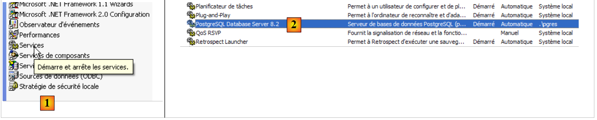 |
- in [1]: we dubbelklikken op [Services]
- naar [2]: we zien dat er een service met de naam [PostgreSQL] aanwezig is, dat deze is gestart ([3]) en dat deze automatisch wordt gestart ([4]).
Om deze instelling te wijzigen, dubbelklikken we op de service [PostgreSQL]:
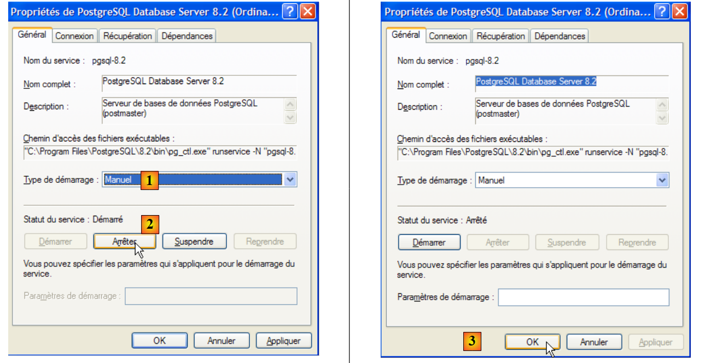 |
- in [1]: we stellen de dienst in op handmatig opstarten
- in [2]: we stoppen de dienst
- in [3]: we bevestigen de nieuwe configuratie van de service
Om de dienst PostgreSQL handmatig te starten en te stoppen, kun je de snelkoppelingen in de map [PostgreSQL] gebruiken:
 |
- in [1]: de snelkoppeling om PostgreSQL te starten
- in [2]: de snelkoppeling om het programma te stoppen
5.6.3. PostgreSQL beheren
Op de bovenstaande schermafbeelding kunt u met de toepassing [pgAdmin III] (3) de SGBD en PostgreSQL beheren. Laten we SGBD starten en vervolgens [pgAdmin III] via het bovenstaande menu:
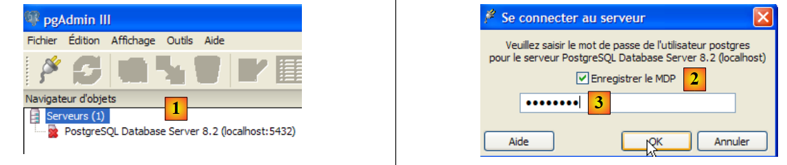 |
- in [1]: dubbelklik op de server PostgreSQL om verbinding te maken
- naar [2,3]: meld je aan als beheerder van SGBD, hier (postgres / postgres)
 |
- in [4]: de enige bestaande database
- in [5]: de enige bestaande gebruiker
5.6.4. Een gebruiker jpa en een database jpa aanmaken
In deze tutorial wordt gebruikgemaakt van PostgreSQL met een database genaamd jpa en een gebruiker met dezelfde naam. We gaan deze nu aanmaken. Eerst de gebruiker:
 |
- in [1]: we maken een nieuwe rol (~gebruiker) aan
- in [2]: aanmaken van de gebruiker jpa
- in [3]: zijn wachtwoord is jpa
- in [4]: het wachtwoord wordt herhaald
- in [5]: de gebruiker krijgt toestemming om databases aan te maken
- in [6]: de gebruiker [jpa] verschijnt in de inlogrollen
Nu de database:
 |
- in [1]: er wordt een nieuwe verbinding met de server aangemaakt
- in [2]: deze krijgt de naam jpa
- in [3]: de machine waarmee we verbinding willen maken
- in [4]: de gebruiker die verbinding maakt
- in [5]: zijn wachtwoord. We bevestigen de configuratie van de verbinding met [OK]
- in [6]: de nieuwe verbinding is aangemaakt. Deze behoort toe aan de gebruiker jpa. Deze gaat nu een nieuwe database aanmaken:
 |
- n [1]: er wordt een nieuwe database toegevoegd
- in [2]: de naam is jpa
- in [3]: de eigenaar is de eerder aangemaakte gebruiker jpa. We bevestigen dit via [OK]
- in [4]: de jpa-database is aangemaakt. Met een simpele klik erop maken we verbinding en krijgen we inzicht in de structuur ervan:
 |
- in [5]: de objecten van het schema [jpa] verschijnen, met name de tabellen. Er zijn er nog geen. Met een rechtermuisklik zouden we er een kunnen aanmaken. We laten het aan de lezer over om dit te doen.
We gaan nu dezelfde tabel [ARTICLES] aanmaken als bij de eerdere SGBD, met behulp van het script SQL [schema-articles.sql] dat in paragraaf 5.4.6 is gegenereerd.
 |
- naar [1]: open de editor SQL
- in [2]: open een script SQL
- in [3]: het in paragraaf 5.4.6 aangemaakte script [schema-articles.sql] aanwijzen.
 |
- in [4]: het script is geladen. Het wordt uitgevoerd.
- in [5]: de tabel [ARTICLES] is aangemaakt.
- in [6, 7]: de inhoud ervan
5.6.5. Stuurprogramma JDBC van PostgreSQL
De driver JDBC van PostgreSQL is beschikbaar in de map [jdbc] van de installatiemap van PostgreSQL:
 |
We plaatsen het Jdbc-archief net als eerder (paragraaf 5.4.7) in de map <jdbc>:
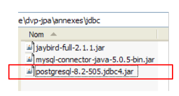 |
Om deze driver JDBC te testen, gebruiken we Eclipse en de plug-in SQL Explorer. De lezer wordt verzocht de procedure te volgen die in paragraaf 5.4.7 wordt uitgelegd. Hieronder tonen we enkele relevante schermafbeeldingen:
 |
- in [1]: het archief van de driver JDBC is aangeduid als PostgreSQL
- in [2]: het stuurprogramma JDBC van PostgreSQL is beschikbaar
 |
- naar [3]: definitie van de verbinding (gebruiker, wachtwoord)=(jpa, jpa)
- in [4]: de verbinding is actief
- in [5]: de verbinding met de database is tot stand gebracht
- in [6]: de inhoud van de tabel [ARTICLES]
5.7. SGBD : Oracle 10g Express
5.7.1. Installatie
De SGBD Oracle 10g Express is beschikbaar via de URL [http://www.oracle.com/technology/software/products/database/xe/index.html]:
 |
- in [1]: de downloadpagina van Oracle 10g Express
- en via [2]: kies een Windows-versie. Zodra het bestand is gedownload, voer je het uit:
 |
- in [1]: dubbelklik op het bestand [OracleXE.exe]
- in [2]: de eerste pagina van de installatiewizard
 |
- naar [3]: de licentie accepteren
- naar [4]: de standaardwaarden accepteren.
 |
- in [5,6]: de gebruiker SYSTEM krijgt het wachtwoord 'system'.
- in [7]: de installatie wordt gestart
De installatie van Oracle 10g Express leidt tot het aanmaken van een map in [Démarrer / Programmes ]:

5.7.2. Oracle 10g starten / stoppen
Net als bij de voorgaande SGBD-bestanden is Oracle 10g geïnstalleerd als een Windows-service die automatisch bij het opstarten wordt gestart. We wijzigen deze configuratie:
[Démarrer / Panneau de configuration / Performances et maintenance / Outils d'administration / Services ]:
 |
- in [1]: we dubbelklikken op [Services]
- naar [2]: we zien dat er een service met de naam [OracleServiceXE] aanwezig is, dat deze is gestart ([3]) en dat deze automatisch wordt gestart ([4]).
- in [5]: een andere Oracle-service, genaamd "Listener", is eveneens actief en wordt automatisch gestart.
Om deze instelling te wijzigen, dubbelklikken we op de service [OracleServiceXE]:
 |
- in [1]: we stellen de service in op handmatig opstarten
- bij [2]: we stoppen de dienst
- in [3]: we bevestigen de nieuwe configuratie van de service
We gaan op dezelfde manier te werk met de service [OracleXETNSListener] (zie [5] hierboven). Om de service OracleServiceXE handmatig te starten en te stoppen, kunnen we de snelkoppelingen uit de map [Oracle] gebruiken:
 |
- naar [1]: om SGBD te starten
- naar [2]: om het te stoppen
- naar [3]: om het te beheren (waardoor het wordt gestart als dat nog niet het geval is)
5.7.3. Een jpa-gebruiker en een jpa-database aanmaken
Op de bovenstaande schermafbeelding kunt u met de toepassing [3] de Oracle 10g Express-toepassing SGBD beheren. Laten we SGBD en [1] starten, en vervolgens de beheerapplicatie [3] via het bovenstaande menu:
 |
- in [1]: log in als beheerder van SGBD, hier (system / system)
- in [2]: maak een nieuwe gebruiker aan
 |
- in [4]: gebruikersnaam
- in [5, 6]: zijn wachtwoord, hier jpa
- in [7]: de gebruiker jpa is aangemaakt
In Oracle wordt een gebruiker automatisch gekoppeld aan een database met dezelfde naam. De database jpa bestaat dus tegelijk met de gebruiker jpa.
5.7.4. Aanmaken van de tabel [ARTICLES] in de database jpa
OracleXE is geïnstalleerd met een client SQL die in de opdrachtregelmodus werkt. Men kan comfortabeler werken met SQL Developer, eveneens geleverd door Oracle. Deze is te vinden op de website:
[http://www.oracle.com/technology/products/database/sql_developer/index.html]
 |
- in [1]: de downloadpagina
- in [2]: kies een Windows-versie zonder JRE als deze al is geïnstalleerd (wat hier het geval is), aangezien [SQL Developer] een Java-toepassing is.
 |
- in [3]: pak het gedownloade zip-bestand uit
- in [4]: start het uitvoerbare bestand [sqldeveloper.exe]
 |
- in [5]: bij de eerste keer opstarten van [SQL Developer] het pad naar de op de computer geïnstalleerde JRE opgeven
- in [5b]: maak een nieuwe verbinding aan
 |
- in [6]: met SQL Developer kun je verbinding maken met verschillende SGBD. Kies Oracle.
- in [7]: naam die aan de verbinding wordt gegeven die u aan het aanmaken bent
- in [8]: eigenaar van de verbinding
- in [9]: het wachtwoord (jpa)
- in [10]: de standaardwaarden behouden
- in [11]: om de verbinding te testen (Oracle moet gestart zijn)
- in [12]: om de configuratie van de verbinding te voltooien
- in [13]: de objecten van de jpa-database
- in [14]: hiermee kunnen tabellen worden aangemaakt. Net als in de voorgaande gevallen gaan we de tabel [ARTICLES] aanmaken op basis van het script dat in paragraaf 5.4.6 is gemaakt.
 |
- in [15]: we openen een script SQL
- naar [16]: we wijzen het script SQL aan dat in paragraaf 5.4.6 is aangemaakt.
- in [17]: het script dat zal worden uitgevoerd
 |
- in [18]: het resultaat van de uitvoering: de tabel [ARTICLES] is aangemaakt. Dubbelklik erop om de eigenschappen te bekijken.
- en [19]: de inhoud van de tabel.
5.7.5. Stuurprogramma JDBC van OracleXE
De driver JDBC van OracleXE is beschikbaar in de map [jdbc/lib] van de installatiemap van OracleXE [1]:
 |
We plaatsen het Jdbc-archief [ojdbc14.jar] net als de voorgaande (paragraaf 5.4.7) in de map <jdbc> [2]:
Om deze driver JDBC te testen, gebruiken we Eclipse en de plug-in SQL Explorer. De lezer wordt verzocht de procedure te volgen die in paragraaf 5.4.7 wordt uitgelegd. Hieronder tonen we enkele relevante schermafbeeldingen:
 |
- in [1]: het archief van de driver JDBC is aangeduid als OracleXE
- in [2]: het stuurprogramma JDBC van OracleXE is beschikbaar
 |
- naar [3]: definitie van de verbinding (user, password)=(jpa, jpa)
- in [4]: de verbinding is actief
- in [5]: de verbinding met de database
- in [6]: de inhoud van de tabel [ARTICLES]
5.8. De SGBD SQL Server Express 2005
5.8.1. Installatie
De SGBD SQL Server Express 2005 is beschikbaar via de url [http://msdn.microsoft.com/vstudio/express/sql/download/]:
 |
- in [1]: download en installeer eerst het .NET 2.0-platform
- in [2]: installeer en download vervolgens SQL Server Express 2005
- in [3]: installeer en download vervolgens SQL Server Management Studio Express, waarmee u SQL Server kunt beheren
De installatie van SQL Server Express leidt tot het aanmaken van een map in [Démarrer / Programmes ]:
 |
- in [1]: de configuratie-app voor SQL Server. Hiermee kun je de server ook starten en stoppen
- in [2]: de beheerapplicatie van de server
5.8.2. SQL-server starten/stoppen
Net als bij de voorgaande SGBD-versies is de SQL Server Express geïnstalleerd als een Windows-service die automatisch wordt gestart. We wijzigen deze configuratie:
[Démarrer / Panneau de configuration / Performances et maintenance / Outils d'administration / Services ]:
 |
- in [1]: we dubbelklikken op [Services]
- in [2]: we zien dat er een service met de naam [SQL Server] aanwezig is, dat deze is gestart ([3]) en dat deze automatisch wordt gestart ([4]).
- in [5]: een andere service die verband houdt met de SQL Server, genaamd "SQL Server Browser", is eveneens actief en wordt automatisch gestart.
Om deze instelling te wijzigen, dubbelklikken we op de dienst [SQL Server]:
 |
- in [1]: we stellen de dienst in op handmatig opstarten
- in [2]: we stoppen de service
- in [3]: we bevestigen de nieuwe configuratie van de service
We gaan op dezelfde manier te werk met de service [SQL Server Browser] (zie [5] hierboven). Om de SQL-server handmatig te starten en te stoppen, kunt u de toepassing [1] uit de map [SQL server] gebruiken:
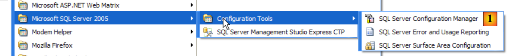 |
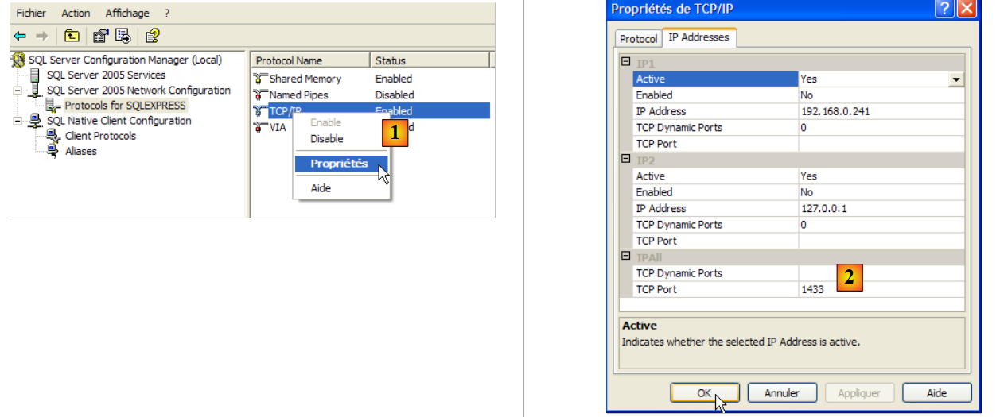 |
- in [1]: zorg ervoor dat het protocol TCP/IP is ingeschakeld (enabled) en ga vervolgens naar de eigenschappen van het protocol.
- in [2]: op het tabblad [IP Addresses], optie [IPAll]:
- het veld [TCP Dynamic ports] wordt leeg gelaten
- de luisterpoort van de server is ingesteld op 1433 in [TCP Port]
 |
- in [3]: met een rechtermuisklik op de service [SQL Server] krijgt u toegang tot de opties voor het starten en stoppen van de server. Hier starten we de server.
- in [4]: de SQL-server is gestart
5.8.3. Een jpa-gebruiker en een jpa-database aanmaken
Laten we SGBD starten zoals hierboven aangegeven, en vervolgens de beheerapplicatie [1] via het onderstaande menu:
 |
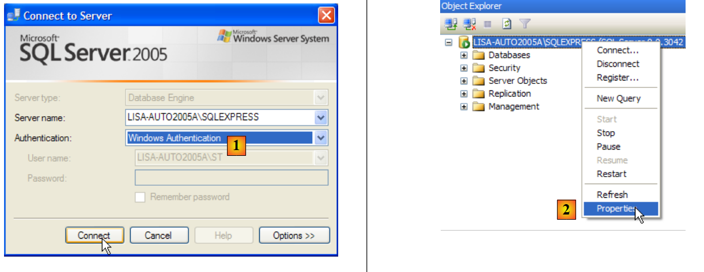 |
- in [1]: we maken verbinding met de SQL-server als Windows-beheerder
- in [2]: de verbindingsinstellingen configureren
 |
- in [3]: een gemengde verbindingsmodus met de server toestaan: ofwel met een Windows-login (een Windows-gebruiker), ofwel met een SQL Server-login (een account dat binnen SQL Server is gedefinieerd, onafhankelijk van elk Windows-account).
- in [3b]: er wordt een SQL Server-gebruiker aangemaakt
 |
- in [4]: optie [General]
- in [5]: de gebruikersnaam
- in [6]: het wachtwoord (hier jpa)
- in [7]: optie [Server Roles]
- in [8]: de gebruiker jpa krijgt het recht om databases aan te maken
We bevestigen deze configuratie:
 |
- in [9]: de gebruiker jpa is aangemaakt
- in [10]: we melden ons af
- in [11]: we loggen opnieuw in
 |
- in [12]: er wordt ingelogd als gebruiker jpa/jpa
- in [13]: zodra de gebruiker jpa is ingelogd, maakt hij een database aan
 |
- in [14]: de database krijgt de naam jpa
- in [15]: en zal eigendom zijn van de gebruiker jpa
- in [16]: de database jpa is aangemaakt
5.8.4. Aanmaken van de tabel [ARTICLES] in de database jpa
Net als in de voorgaande voorbeelden gaan we de tabel [ARTICLES] aanmaken op basis van het script dat in paragraaf 5.4.6 is gemaakt.
 |
- in [1]: we openen een script SQL
- in [2]: we wijzen het script SQL aan dat in paragraaf 5.4.6, pagina 240, is aangemaakt.
- in [3]: men moet zich opnieuw aanmelden (jpa/jpa)
- in [4]: het script dat zal worden uitgevoerd
- in [5]: selecteer de database waarin het script zal worden uitgevoerd
- in [6]: het uitvoeren
 |
- in [7]: het resultaat van de uitvoering: de tabel [ARTICLES] is aangemaakt.
- in [8]: de inhoud ervan opvragen
- in [9]: de inhoud van de tabel.
5.8.5. Stuurprogramma JDBC van SQL Server Express
 |
- in [1]: een Google-zoekopdracht met de tekst [Microsoft SQL Server 2005 JDBC Driver] leidt ons naar de downloadpagina van het stuurprogramma JDBC. We selecteren de meest recente versie
- in [2]: het gedownloade bestand. We dubbelklikken erop. Het bestand wordt uitgepakt en er ontstaat een map waarin we het Jdbc-stuurprogramma [3] vinden
- in [4]: we plaatsen het Jdbc-archief [sqljdbc.jar] net als de vorige (paragraaf 5.4.7) in de map <jdbc>
Om deze driver JDBC te testen, gebruiken we Eclipse en de plug-in SQL Explorer. De lezer wordt verzocht de procedure te volgen die in paragraaf 5.4.7 wordt uitgelegd. Hieronder tonen we enkele relevante schermafbeeldingen:
 |
- in [1]: het archief van de driver JDBC is aangewezen vanuit SQL Server
- in [2]: het stuurprogramma JDBC van de SQL-server is beschikbaar
 |
- naar [3]: definitie van de verbinding (gebruiker, wachtwoord)=(jpa, jpa)
- in [4]: de verbinding is actief
- in [5]: verbinding met de database
- in [6]: de inhoud van de tabel [ARTICLES]
5.9. SGBD t HSQLDB
5.9.1. Installatie
De SGBD HSQLDB is beschikbaar via de url [http://sourceforge.net/projects/hsqldb]. Het is een in Java geschreven SGBD, die zeer weinig geheugen in beslag neemt en databases in het geheugen beheert in plaats van op schijf. Het resultaat is een zeer hoge snelheid bij het uitvoeren van query’s. Dat is het belangrijkste voordeel. De op deze manier in het geheugen aangemaakte databases zijn nog steeds beschikbaar wanneer de server wordt afgesloten en vervolgens opnieuw wordt opgestart. De SQL-opdrachten die zijn gegeven om de databases aan te maken, worden namelijk opgeslagen in een logbestand om bij de volgende opstart van de server opnieuw te worden uitgevoerd. Zo blijft de persistentie van de databases in de tijd gewaarborgd.
De methode heeft zijn beperkingen en HSQLDB is geen SGBD voor commercieel gebruik. Het belangrijkste voordeel ligt in het testen of in demonstratietoepassingen. Het feit dat HSQLDB bijvoorbeeld in Java is geschreven, maakt het mogelijk om het op te nemen in Ant-taken (Another Neat Tool), een Java-tool voor het automatiseren van taken. Zo kunnen dagelijkse tests van code die in ontwikkeling is, geautomatiseerd door Ant, tests van databases integreren die worden beheerd door SGBD en HSQLDB. De server wordt gestart, gestopt en beheerd door Java-taken.
 |
- in [1]: de downloadpagina
- in [2]: de meest recente versie downloaden
 |
- in [3]: het gedownloade zip-bestand uitpakken
- in [4]: de map [hsqldb] die is ontstaan door het uitpakken
- naar [5]: de map [demo] die het script bevat waarmee de server [hsql] en [6] kan worden gestart, en in [7], het script waarmee een eenvoudig beheerprogramma voor de server kan worden gestart.
5.9.2. HSQLDB starten / stoppen
Om de server HSQLDB te starten, dubbelklikt u op de hierboven genoemde toepassing [runManager.bat] [6]:
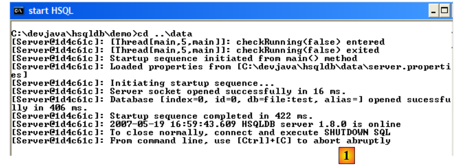 |
- in [1]: je ziet dat je, om de server te stoppen, gewoon op Ctrl-C hoeft te drukken in het venster.
5.9.3. De database [test]
De standaard beheerde database bevindt zich in de map [data]:
 |
- in [1]: bij het opstarten voert de SGBD HSQL het script met de naam [test.script] uit
- regel 1: er wordt een schema met de naam [public] aangemaakt
- regel 2: er wordt een gebruiker [sa] met een leeg wachtwoord aangemaakt
- regel 3: de gebruiker [sa] krijgt beheerdersrechten
Uiteindelijk is er een gebruiker met beheerdersrechten aangemaakt. Deze gebruiker zullen we hierna gebruiken.
5.9.4. Stuurprogramma JDBC van HSQL
De JDBC-driver van SGBD HSQL bevindt zich in de map [lib]:
 |
- in [1]: het archief [hsqldb.jar] bevat de JDBC-driver van SGBD HSQL
- in [2]: we plaatsen dit archief net als de vorige (paragraaf 5.4.7) in de map <jdbc>
Om deze driver JDBC te controleren, gebruiken we Eclipse en de plug-in SQL Explorer. De lezer wordt verzocht de procedure te volgen die in paragraaf 5.4.7 wordt uitgelegd. We tonen enkele relevante schermafbeeldingen:
 |
- in [1]: [window / preferences / SQL Explorer / JDBC Drivers]
- in [2]: de server wordt geconfigureerd in [HSQLDB]
- in [3]: het archief [hsqldb.jar] met de JDBC-driver wordt aangewezen
- in [4]: de naam van de Java-klasse van de JDBC-driver
- in [5]: de JDBC-driver is geconfigureerd
Zodra dit is gebeurd, maken we verbinding met de server HSQL. Deze starten we eerst op.
 |
- in [6]: we maken een nieuwe verbinding aan
- in [7]: we geven deze een naam
- in [8]: we willen verbinding maken met de server HSQLDB
- in [9]: de URL van de database waarmee we verbinding willen maken. Dit is de eerder genoemde database [test].
- in [10]: we loggen in als gebruiker [sa]. We hebben gezien dat hij beheerder was van SGBD.
- in [11]: de gebruiker [sa] heeft geen wachtwoord.
We bevestigen de configuratie van de verbinding.
 |
- in [12]: we maken verbinding
- in [13]: men identificeert zich
- in [14]: verbinding tot stand gebracht
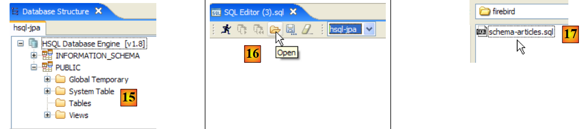 |
- in [15]: het schema [PUBLIC] heeft nog geen tabel
- in [16]: we gaan de tabel [ARTICLES] aanmaken op basis van het script [schema-articles.sql] dat in paragraaf 5.4.6 is aangemaakt.
- in [17]: we selecteren het script
- in [18]: het uit te voeren script
- in [19]: dit wordt uitgevoerd nadat alle opmerkingen zijn verwijderd, omdat HSQLB dit niet accepteert.
 |
- zodra het script is uitgevoerd, vernieuwen we de weergave van de database in [20]
- in [21]: de tabel [ARTICLES] is aanwezig
- in [22]: de inhoud ervan
Laten we de server HSQLDB stoppen en vervolgens opnieuw opstarten. Laten we daarna het bestand [test.script] bekijken:
We zien dat SGBD de verschillende opdrachten SQL die tijdens de vorige sessie zijn uitgevoerd, heeft opgeslagen en deze bij het starten van de nieuwe sessie opnieuw uitvoert. Verder zien we (regel 2) dat de tabel [ARTICLES] in het geheugen wordt aangemaakt (MEMORY). Bij elke sessie worden de verzonden SQL-opdrachten opgeslagen in [test.log], om aan het begin van de volgende sessie te worden gekopieerd naar [test.script] en aan het begin van de sessie opnieuw te worden uitgevoerd.
5.10. De SGBD Apache Derby-
5.10.1. Installatie
De SGBD Apache Derby is beschikbaar via de url [http://db.apache.org/derby/]. Het is een SGBD die eveneens in Java is geschreven en ook zeer weinig geheugen in beslag neemt. Het biedt vergelijkbare voordelen als HSQLDB. Ook deze versie kan worden geïntegreerd in Java-toepassingen, c.a.d, als integraal onderdeel van de toepassing en in dezelfde JVM draaien.
 |
- in [1]: de downloadpagina
- in [2,3]: de meest recente versie downloaden
 |
- in [3]: het gedownloade zip-bestand uitpakken
- in [4]: de map [db-derby-*-bin] die is ontstaan door het uitpakken
- naar [5]: de map [bin] die het script bevat om de server [db derby] en [6] te starten, en in [7], het script om deze te stoppen.
5.10.2. Apache Derby (Db Derby) starten / stoppen
Om de Db Derby-server te starten, dubbelklikt u op de hierboven genoemde toepassing [startNetworkServer] [6]:
- in [1]: de server is gestart. We stoppen deze met de hierboven genoemde applicatie [stopNetworkServer] [7].
5.10.3. JDBC-driver voor Db Derby
De JDBC-driver van de SGBD Derby-database bevindt zich in de map [lib] van de installatiemap:
 |
- in [1]: het archief [derbyclient.jar] bevat de JDBC-driver van de SGBD Db Derby
- in [2]: we plaatsen dit archief net als de vorige (paragraaf 5.4.7) in de map <jdbc>
Om deze driver JDBC te testen, gebruiken we Eclipse en de plug-in SQL Explorer. De lezer wordt verzocht de procedure te volgen die in paragraaf 5.4.7 wordt uitgelegd. We tonen enkele relevante schermafbeeldingen:
 |
- in [1]: [window / preferences / SQL Explorer / JDBC Drivers]
- in [2]: de JDBC-driver van Apache Derby staat niet in de lijst. Deze wordt toegevoegd.
 |
- in [3]: we geven de nieuwe driver een naam
- in [4]: we specificeren de vorm van de URL's die door de JDBC-driver worden ondersteund
- in [5]: we hebben het .jar-archief van de JDBC-driver aangewezen
- in [5b]: de naam van de Java-klasse van de JDBC-driver
- in [5c]: de JDBC-driver is geconfigureerd
Zodra dit is gebeurd, maken we verbinding met de Apache Derby-server. Deze starten we eerst op.
- in [6]: we maken een nieuwe verbinding aan
- in [7]: we geven deze een naam
- in [8]: we willen verbinding maken met de Apache Derby-server
- in [9]: de URL van de database waarmee we verbinding willen maken. Achter het standaardbegin [jdbc:derby://localhost:1527] voeren we het pad in naar een map op de schijf die een Derby-database bevat. Met de optie [create=true] kan deze map worden aangemaakt als deze nog niet bestaat.
- in [10,11]: er wordt verbinding gemaakt als gebruiker [jpa/jpa]. Ik heb dit niet verder onderzocht, maar het lijkt erop dat men elke gewenste gebruikersnaam en wachtwoord kan invoeren. Hier wordt de eigenaar van de database opgegeven, indien create=true.
Bevestig de verbindingsconfiguratie.
 |
- in [12]: we loggen in
- in [13]: je identificeert jezelf (jpa/jpa)
- in [14]: we zijn ingelogd
 |
- in [15]: het schema [jpa] verschijnt nog niet.
- in [16]: we gaan de tabel [ARTICLES] aanmaken op basis van het script [schema-articles.sql] dat in paragraaf 5.4.6 is aangemaakt.
- in [17]: we selecteren het script
- in [18]: het uit te voeren script
- in [19]: voer het uit nadat alle opmerkingen zijn verwijderd, omdat Apache Derby, net als HSQLB, deze niet accepteert.
- zodra het script is uitgevoerd, vernieuw je in [20] de weergave van de database
- in [21]: het schema [jpa] en de tabel [ARTICLES] zijn aanwezig
- in [22]: de inhoud van de tabel [ARTICLES]
 |
- in [23]: de inhoud van de map [derby\jpa] waarin de database is aangemaakt.
5.11. Het Spring 2- -framework
Het Spring 2-framework is beschikbaar via de URL [http://www.springframework.org/download]:
 |
- en [1]: hier kunt u de nieuwste versie downloaden
- in [2]: we downloaden de zogenaamde "versie met afhankelijkheden", omdat deze de .jar-bestanden bevat van de tools van derden die Spring integreert en die we altijd nodig hebben.
 |
- in [3]: pak het gedownloade archief uit
- in [4]: de installatiemap van Spring 2.1
 |
- in [5]: in de map <dist> vind je de Spring-archieven. Het archief [spring.jar] bevat alle klassen van het Spring-framework. Deze zijn ook per module beschikbaar in de map <modules> in [6]. Als je weet welke modules je nodig hebt, kun je ze hier vinden. Zo voorkom je dat je archieven in de applicatie opneemt die je niet nodig hebt.
 |
- in [7]: de map <lib> bevat de archieven van de tools van derden die door Spring worden gebruikt
- in [8]: enkele archieven van het project [jakarta-commons]
Wanneer in de tutorial Spring-archieven worden gebruikt, moet u deze ophalen uit de map <dist> of uit de map <lib> van de Spring-installatiemap.
5.12. De container EJB3 van JBoss
De container EJB3 van JBoss is beschikbaar via de URL [http://labs.jboss.com/jbossejb3/downloads/embeddableEJB3]:
 |
- in [1]: we downloaden JBoss en EJB3. We zien dat de datum van het product (september 2006) ouder is dan de maand waarin we het downloaden (mei 2007). We kunnen ons afvragen of dit product nog steeds wordt bijgewerkt.
- in [2]: het gedownloade bestand
 |
- in [3]: het uitgepakte zip-bestand
- in [4]: de archieven [hibernate-all.jar, jboss-ejb3-all.jar, thirdparty-all.jar] vormen de container EJB3 van JBoss. Deze moeten in het classpath worden geplaatst van de applicatie die deze container gebruikt.